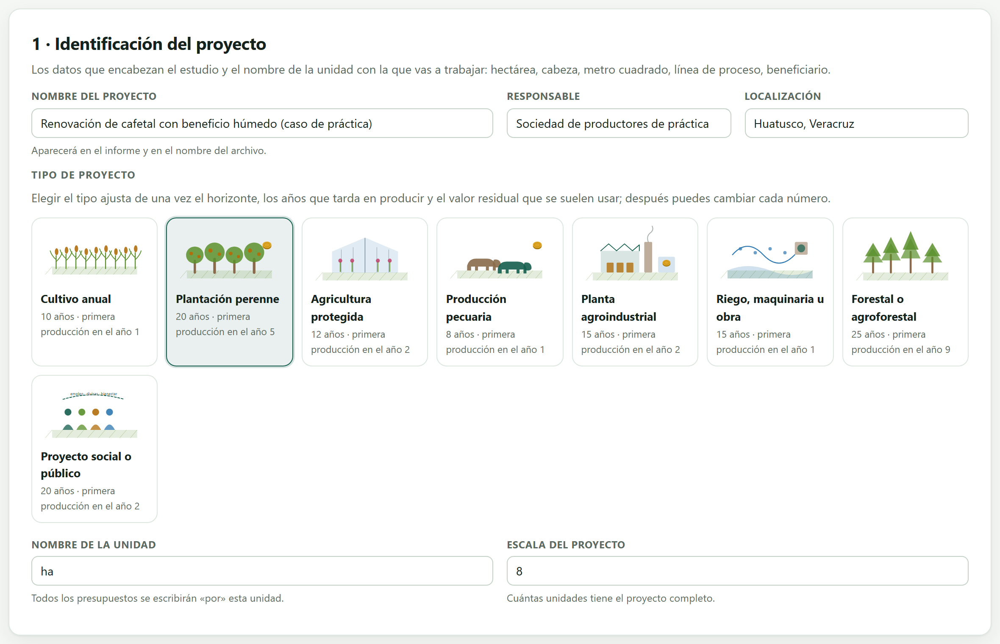
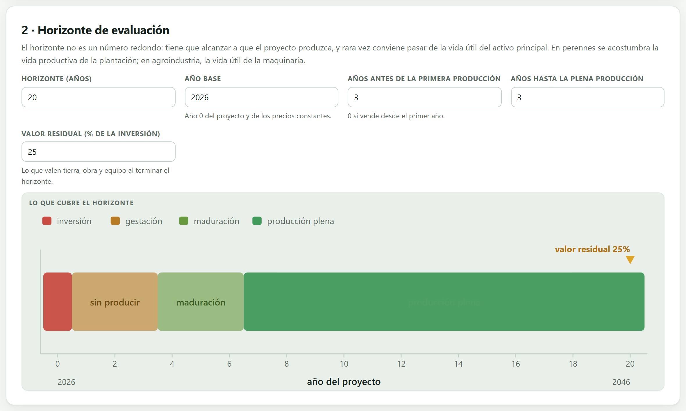
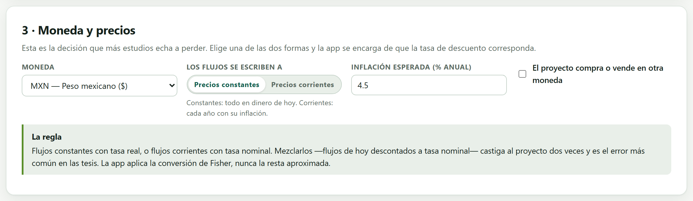
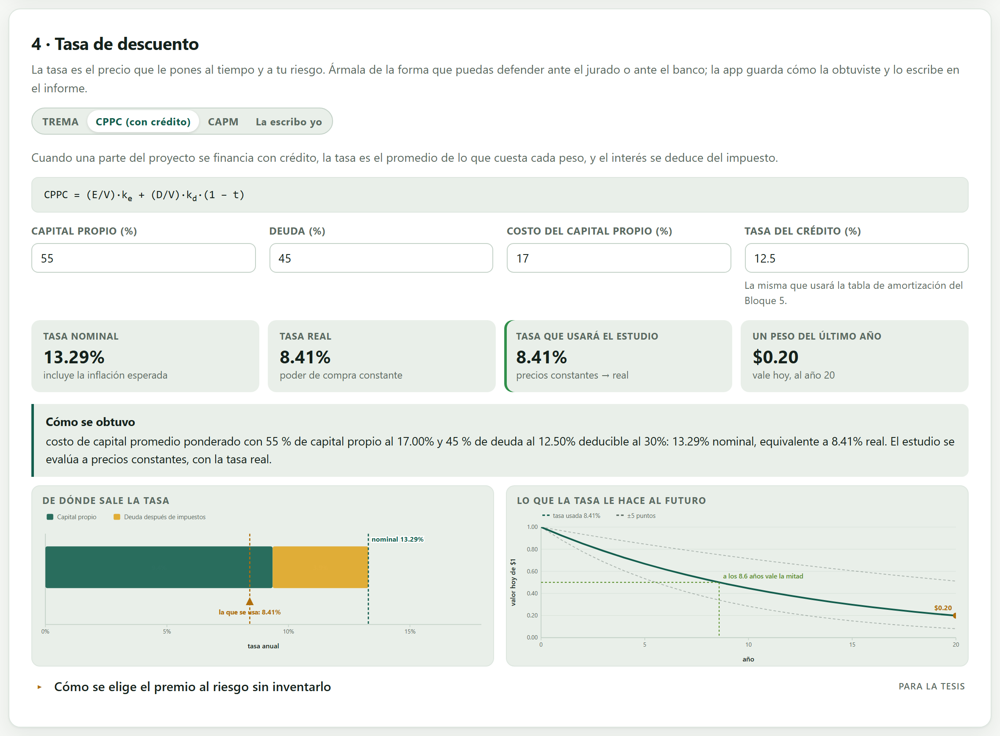
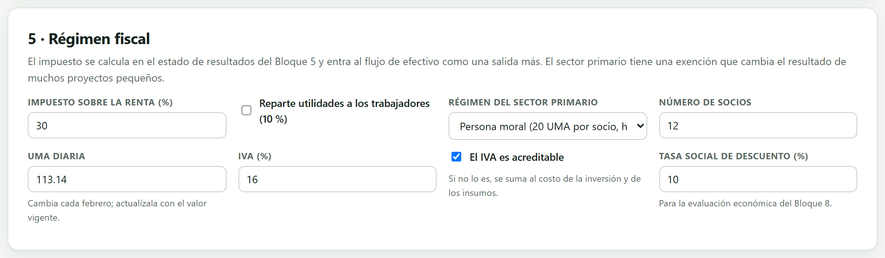
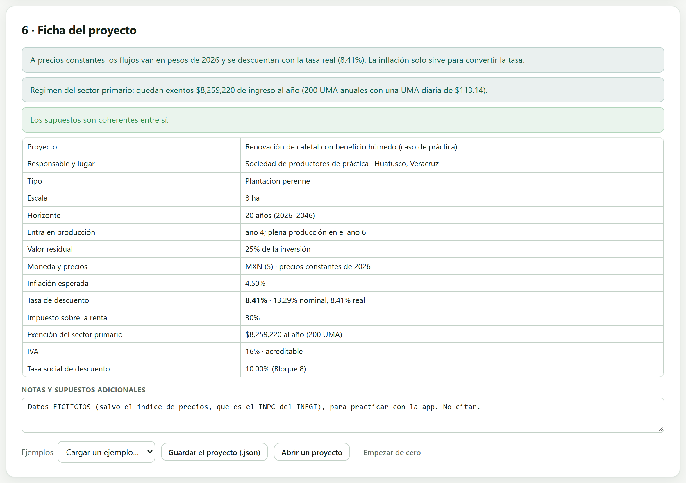

Español o inglés, con el botón ES · EN. En este manual los nombres de botones y menús se escriben como aparecen en pantalla en español, por ejemplo Armar el informe.
Cómo citar el programa
Barrera-Guzmán, L. Á. (2026). EconomicsPro: plataforma en el navegador para la evaluación económica y financiera de proyectos agroindustriales (versión 1.0) [Programa de cómputo]. https://doi.org/10.5281/zenodo.23005974
Cómo citar este manual
Barrera-Guzmán, L. Á. (2026). EconomicsPro. Manual de usuario (1.ª ed.). Distribuido con EconomicsPro, versión 1.0. https://doi.org/10.5281/zenodo.23005974
Ese identificador de objeto digital representa a todas las versiones del programa y siempre lleva a la más reciente; cada versión archivada tiene además el suyo propio. La cita del programa aparece también en la sección Cómo citar de la portada de la app y al final de cada informe del Bloque 10.
iPrivacidad
EconomicsPro funciona por completo dentro de tu navegador. Los archivos que abres se leen en tu computadora y nunca se envían a ningún servidor. Puedes evaluar el proyecto de una empresa, el expediente de una inversión pública o los datos de una tesis en curso sin que nada de eso salga de tu equipo. El programa tampoco necesita internet: una vez copiado, funciona con la máquina desconectada.
Las ilustraciones, los diagramas y las capturas de pantalla de este manual son originales: se generaron con el propio programa o con código escrito para el manual. Los tres estudios de práctica que se usan como ejemplo a lo largo del texto —nopal, café y fresa— llevan datos ficticios, y así se dice cada vez que aparecen; las series y los presupuestos de ejemplo de los bloques son ilustrativos, no cifras oficiales. La única serie real que trae el programa es el índice nacional de precios al consumidor del INEGI, usado bajo sus términos de libre uso.
El manual sigue el mismo orden que la app: diez bloques numerados que se recorren de izquierda a derecha en la barra de arriba. Cada capítulo explica un bloque y lleva su mismo número —el capítulo 4 es el Bloque 4, y sus secciones, figuras y tablas se numeran 4.1, 4.2…—. Cada uno empieza con la teoría indispensable, sigue con lo que la pantalla calcula y cómo se lee, y termina con un ejemplo paso a paso usando los datos que ya vienen dentro del programa. Esta introducción va antes de los bloques y se numera aparte: I.1, I.2…
Un color para cada bloque
El color del bloque aparece en la apertura de su capítulo, en el número de cada sección, en la pestaña del borde de la hoja y en el índice, y es el mismo de la franja de la portada. Así sabes de un vistazo en qué parte de la app estás.
Bloque
Nombre en la app
Qué hace
1
Inicio
Portada, el motor financiero completo, dos laboratorios que calculan de verdad, la teoría en lenguaje claro y las referencias
2
Proyecto
Tipo de proyecto, horizonte, moneda, precios constantes o corrientes, tasa de descuento y régimen fiscal
3
Mercado
Series de precio y rendimiento, deflación, proyección con banda, demanda y oferta, y programa de ventas
4
Inversión y costos
Inversión fija y diferida, presupuestos de establecimiento y de operación, reposiciones y capital de trabajo
5
Estados proforma
Crédito refaccionario y de avío, estado de resultados, los dos flujos, balance, punto de equilibrio y razones
6
Evaluación financiera
VAN, TIR, TIRM, relación beneficio–costo, recuperación, valor anual equivalente y análisis marginal del CIMMYT
7
Riesgo
Sensibilidad, valores límite, tornado, escenarios, simulación de Monte Carlo y árbol de decisión
8
Evaluación social
Precios cuenta, eliminación de transferencias, VANE, empleo, divisas y valor agregado
9
Decisiones
Alternativas comparadas, TIR incremental, racionamiento de capital, reemplazo, turno óptimo y comprar o rentar
10
Informe
Estudio de figuras, informe imprimible con metodología y memoria de cálculo, y paquete del estudio
Tipos de recuadros
iNota
Aclaraciones y consejos prácticos que ahorran tiempo.
!Importante
Lo que puede cambiar tus conclusiones si se pasa por alto.
θTeoría en breve
La idea detrás de un cálculo, sin fórmulas innecesarias.
▸Ejemplo
Un caso con los datos incluidos en el programa, paso a paso.
✓Regla de decisión
Si el resultado cae en este caso…
entonces esta es la lectura recomendada.
Son guías para interpretar, no leyes: lo que sabes del cultivo, de la empresa y de la región siempre manda.
900 ppp
Dato clave
Una cifra o un hecho que conviene recordar; por ejemplo, la resolución máxima a la que el Bloque 10 exporta las figuras.
Convenciones de escritura
Así se escribe
Significa
Armar el informe
Un botón, casilla o menú de la app, con su texto tal como aparece en pantalla en español.
Bloque 10›Estudio de figuras
Una ruta: abre lo primero y dentro busca lo segundo.
Precio, .csv
Un nombre de columna, de archivo o un valor que se escribe tal cual.
VAN, TIR, B/C, VAE · NPV, IRR
Siglas en español; entre paréntesis, cuando ayuda, la sigla inglesa de la literatura.
$1,512,493 · $102,177.71
Dinero: sin decimales cuando es un total, con dos cuando es un precio unitario, como en la app.
●◐—
Disponible · disponible en parte o con condiciones · no aplica.
!Las cifras de este manual
Todos los resultados que aparecen en el texto se obtuvieron corriendo la app con los datos que se indican, y se copiaron de la pantalla. Si repites los pasos con la misma base de práctica, debes ver los mismos números. Cuando una cifra depende del azar —la simulación de Monte Carlo, por ejemplo— se dice con qué semilla se obtuvo.
In
Introducción · Antes de los bloques
Introducción a EconomicsPro
Qué es el programa, qué preguntas de un estudio de evaluación responde, qué datos acepta y cómo se recorre de principio a fin. Incluye las cinco ideas de evaluación de proyectos que sostienen todo lo demás, y una lista honesta de lo que el programa no hace.
I.1¿Qué es EconomicsPro?
I.2Preguntas que responde
I.3Cinco ideas que sostienen el manual
I.4Datos que acepta y qué entrega
I.5Qué necesitas y cómo abrirlo
I.6Recorrido por la interfaz
I.7Los tres estudios de práctica
I.8Cómo se recorre un estudio
I.9Lo que el programa no hace
I.1¿Qué es EconomicsPro?
EconomicsPro es una plataforma para armar y evaluar el estudio económico y financiero de un proyecto agropecuario o agroindustrial del mercado a la decisión: proyecta los ingresos, presupuesta la inversión y los costos, arma el crédito y los estados proforma, calcula los indicadores de rentabilidad, mide el riesgo, corrige los precios de mercado para saber qué le conviene al país y no solo al dueño, compara alternativas y entrega un informe con figuras, metodología redactada y memoria de cálculo.
Todo ocurre dentro del navegador. No hay que instalar nada, no se necesita saber programar y los datos no salen de la computadora. Está escrito para proyectos del campo y de la agroindustria, no para finanzas corporativas genéricas: sabe que una plantación tarda años en dar, que el capital de trabajo sigue al ciclo del cultivo y no al año calendario, que el precio y el rendimiento se mueven uno contra otro, que el último año del horizonte carga un valor de rescate real y que dos alternativas de distinta duración solo se comparan por su valor anual equivalente.
Figura I.1. El camino de un estudio. Los supuestos del Bloque 2 alimentan los ingresos y los egresos; de ahí salen los estados proforma y los dos flujos de efectivo, y sobre ellos se contestan las tres preguntas que importan —si conviene, qué pasa si falla y qué le deja al país—. El Bloque 1 no es un paso del camino: es el motor que los demás usan.
I.2Preguntas que responde
Un estudio de evaluación no es una hoja de cálculo bonita: es la respuesta ordenada a unas cuantas preguntas. Estas son las que el programa contesta, y el bloque donde se contesta cada una.
Pregunta
Bloque
Con qué
¿A cuántos años miro el proyecto, y en pesos de cuándo?
2
Horizonte y base de precios
¿Qué tasa uso para descontar, y de dónde sale?
2
TREMA, CPPC o CAPM
¿A qué precio voy a vender dentro de cinco años?
3
Serie deflactada y proyección con banda
¿Cuánto cuesta arrancar, y cuánto cada año?
4
Presupuestos de inversión y de operación
¿Cuánto dinero necesito antes de la primera venta?
45
Capital de trabajo y flujo de caja
¿Aguanta el proyecto el crédito que me ofrecen?
5
Servicio de la deuda y su cobertura
¿Conviene invertir? ¿Y me conviene a mí, que pongo el enganche?
6
VAN y TIR de los dos flujos
¿Cuánto tiene que caer el precio para que deje de convenir?
7
Valores límite y tornado
¿Qué probabilidad hay de perder dinero?
7
Simulación de Monte Carlo
¿Le conviene al país, y no solo al dueño?
8
Precios cuenta y VANE
¿Cuántos empleos y cuántas divisas deja?
8
Indicadores sociales
Con un presupuesto fijo, ¿cuáles de todos los proyectos hago?
9
Racionamiento de capital
¿Cuándo conviene reemplazar el tractor? ¿Cuándo cortar el árbol?
9
Vida económica y turno de Faustmann
¿Cómo entrego todo esto de manera que alguien lo pueda revisar?
10
Informe, figuras y paquete
iNo hace falta contestarlas todas
Un anteproyecto puede quedarse en el Bloque 6 y estar completo. La evaluación social del Bloque 8 se pide en los expedientes de inversión pública, no en un plan de negocio; el Bloque 9 solo tiene sentido si hay algo con qué comparar. El informe del Bloque 10 arma lo que haya: lo que no se corrió, no aparece.
I.3Cinco ideas que sostienen el manual
Si estas cinco ideas quedan claras, el resto del manual se lee solo. Ninguna es difícil; lo difícil es aplicarlas sin hacer trampa.
1. El dinero tiene fecha
Un peso de hoy y un peso de dentro de cinco años no son la misma cosa, y no por la inflación: un peso de hoy se puede invertir. Por eso ningún flujo se suma tal cual; primero se trae a hoy dividiéndolo entre (1 + i)t. Esa operación —el descuento— es la única que aparece en todos los bloques del 5 al 9, y es la que dibuja la portada de este manual.
2. Hay dos flujos y dos tasas, y no se mezclan
El flujo del proyecto pregunta si el negocio se sostiene solo, sin importar quién lo pague: no lleva crédito ni intereses. El flujo del inversionista pregunta si le conviene a quien pone el dinero propio: sí lleva el crédito, y con él el escudo fiscal de los intereses. Cada uno se descuenta con su tasa —el costo promedio ponderado del capital para el primero, el costo del capital propio para el segundo—, y comparar el VAN de uno con la tasa del otro es el error más común de una tesis.
Figura I.2. Los dos flujos y sus dos tasas. El Bloque 5 los arma y el Bloque 6 los evalúa por separado; un proyecto puede convenir y el inversionista perder, o al revés, y la app lo dice con todas sus letras cuando pasa.
3. O todo en pesos de hoy, o todo con inflación dentro
Se puede trabajar a precios constantes —todo en pesos del año base, sin inflación— o a precios corrientes —cada año con la inflación encima—. Las dos formas dan el mismo VAN si se hacen bien, porque a precios constantes se descuenta con la tasa real y a corrientes con la nominal. Lo que nunca da: proyectar precios sin inflación y descontar con una tasa que sí la trae. El Bloque 2 te hace elegir una base y el resto de la app la respeta.
4. Para decidir entre dos opciones, solo importa lo que cambia
Si comparas dos dosis de fertilizante, el costo del terreno es el mismo en las dos y no decide nada. Ese es el corazón del presupuesto parcial y del análisis marginal del manual del CIMMYT que trae el Bloque 6: se consideran solo los costos que varían entre tratamientos, se descartan los dominados y se calcula cuánto devuelve cada peso adicional. La misma idea reaparece en el Bloque 9 con la TIR incremental.
5. Lo que le conviene al dueño no es lo que le conviene al país
Los precios de mercado traen impuestos, subsidios y aranceles, que no son costos para el país sino transferencias de un bolsillo a otro. La evaluación económica los quita y corrige los precios con factores de conversión. Por eso un camino rural puede no cobrar un peso y ser excelente socialmente, y un proyecto muy rentable puede serlo gracias a un subsidio. El Bloque 8 calcula los dos resultados y construye el puente que va de uno al otro.
I.4Datos que acepta y qué entrega
El programa no pide una base de datos ni un formato especial: pide números, y los acepta de la forma en que uno los tiene a la mano.
Lo que entra
Forma
Cómo
Escribiendo
Las mini-hojas de los Bloques 3, 4, 6 y 7 se comportan como una hoja de cálculo: las flechas y el Enter mueven el cursor.
Pegando
Copia un bloque de celdas de tu hoja de cálculo y pégalo en cualquier celda: se reparte solo sobre las filas y columnas que siguen.
Un archivo
.csv, .txt o .tsv, con coma, punto y coma o tabulador; el separador se reconoce solo.
Un proyecto
El .json que la propia app guarda, que reabre el estudio completo tal como estaba.
iLos libros de cálculo se guardan como .csv
La app no lee .xlsx ni .ods, porque no carga ninguna biblioteca ajena. Guardar la hoja como .csv, o copiar el bloque y pegarlo, hace lo mismo en un paso. Los números se entienden escritos como se acostumbra: 1,250.50, $1 250.50 y (400) para un negativo entre paréntesis.
Lo que sale
El proyecto en un archivo .json, que es lo que permite a otra persona reabrir el estudio y rehacer cualquier cálculo.
Cada cuadro en .csv, para llevarlo a un documento o a otra hoja.
Las figuras en SVG, PNG o JPG, a 150, 300, 600 o 900 puntos por pulgada, con la resolución escrita dentro del archivo, que es lo que revisa una revista cuando pide 300 ppp.
El informe completo en un solo .html que abre cualquier navegador y desde ahí se imprime a PDF, sin procesador de textos y sin internet.
El paquete del estudio en .zip: el informe, las figuras, los cuadros y el .json, todo junto.
I.5Qué necesitas y cómo abrirlo
Una computadora con un navegador moderno —Chrome, Edge o Firefox actualizados— y la carpeta del programa. Nada más: ni instalación, ni cuenta, ni conexión.
Copia la carpeta de EconomicsPro donde quieras tenerla.
Haz doble clic en index.html. El programa abre en la portada, en español.
Si tu institución bloquea los archivos locales, o si prefieres verlo servido, haz doble clic en Open EconomicsPro.bat —o ejecuta server.ps1— y abre http://localhost:9700. Ese servidor corre en tu propia computadora y no sale a internet.
iEl trabajo se guarda solo
La app guarda el estudio en el navegador conforme lo escribes, y lo encuentra al volver a abrirla en la misma computadora. Aun así, para archivar o para compartir, descarga el .json del proyecto: es el único archivo que garantiza que el estudio se pueda reabrir en otra máquina.
I.6Recorrido por la interfaz
La pantalla es siempre la misma: una barra arriba con los diez bloques numerados y, debajo, el bloque abierto. En la barra están también el idioma —ES y EN— y el botón que cambia entre el tema claro y el oscuro. Los bloques se pueden abrir en cualquier orden, aunque cada uno usa lo que calcularon los anteriores: entrar al Bloque 6 sin haber llenado el 4 muestra la pantalla vacía y dice qué falta.
Figura I.3. La portada y la barra de los diez bloques, que no se mueve de ahí en todo el estudio. Empezar con mi proyecto lleva al Bloque 2; Probar los laboratorios baja a los dos simuladores de esta misma página.
Dentro de un bloque, el orden es siempre el mismo: primero lo que hay que decidir o escribir, luego lo que la app calculó, y al final los cuadros y las figuras que se pueden descargar. Los avisos aparecen junto a lo que los provoca, en tres tonos: los errores impiden seguir, las advertencias señalan algo raro que puede ser correcto, y las notas explican una decisión que la app tomó por ti.
Figura I.4. Así se ve un bloque por dentro, aquí el 6 con el estudio de práctica del café. Arriba, los indicadores en recuadros; debajo, el dictamen redactado, listo para copiarse. Las cifras de esta figura son ficticias, como todo el estudio del que salen.
I.7Los tres estudios de práctica
El programa trae tres estudios completos, con sus series, sus presupuestos, su crédito, sus escenarios y sus factores de conversión, para recorrer los diez bloques con datos que se sostienen entre sí. Se cargan desde la portada o desde la lista de ejemplos del Bloque 2, y este manual los usa en casi todos sus ejemplos. Se eligieron porque cada uno se rompe, o se tensa, en un lugar distinto.
Figura I.5. Los tres estudios, en la portada. Cada tarjeta dice qué es el proyecto y qué conviene practicar con él; los botones lo cargan en la app, lo bajan como proyecto .json o descargan su serie en .csv.
Estudio
Por qué está
Qué enseña
Nopal verdura Milpa Alta
Proyecto pequeño y barato, que corta desde el primer año
Sirve para ver la app entera en su forma más simple. Aun así, mira la caja del primer año: hasta un proyecto excelente necesita dinero antes de la primera venta.
Café de altura Huatusco, con beneficio húmedo
Tres años sin cosecha, producto exportable y horizonte largo
Tensa la maduración, la gracia del crédito y la evaluación económica, donde las divisas que genera por fin cuentan.
Fresa en macrotúnel Zamora
Inversión grande, crédito pesado y márgenes delgados
Es el caso en que un proyecto rentable se queda sin dinero, y donde el riesgo decide.
!Son datos ficticios
Los cultivos, los lugares y los órdenes de magnitud son verosímiles y la aritmética es consistente, pero ningún precio, rendimiento ni costo de estos tres estudios viene de una encuesta ni de una serie oficial: están hechos para practicar, no para citarse. La única excepción es el índice de precios con que se deflacta, que sí es el índice nacional de precios al consumidor del INEGI. Para un estudio real, las series se toman del SIAP, del SNIIM o del INEGI, o del propio trabajo de campo.
I.8Cómo se recorre un estudio
El orden de los bloques es el orden natural del estudio, y conviene seguirlo la primera vez.
Fija las reglas del juego en el Bloque 2: a cuántos años, en pesos de cuándo y con qué tasa. Todo lo demás cuelga de aquí, y cambiarlo al final obliga a revisar todo.
Arma los ingresos en el Bloque 3: la serie de precios, la proyección y el programa de ventas año por año.
Arma los egresos en el Bloque 4: qué se compra al principio, qué cuesta cada año y cuánto dinero hay que tener parado para operar.
Mete el crédito en el Bloque 5 y mira los estados proforma. Aquí aparece el primer dictamen serio: si la caja del primer año es negativa, hay que resolverlo antes de seguir.
Evalúa en el Bloque 6. Si el VAN es negativo, no sigas adelante: regresa a cambiar lo que esté mal supuesto, y anota qué cambiaste.
Ponlo a prueba en el Bloque 7: qué tanto tiene que empeorar cada supuesto para que el dictamen se voltee.
Si el expediente lo pide, haz la evaluación social en el Bloque 8 y la comparación de alternativas en el Bloque 9.
Entrega desde el Bloque 10: el informe, las figuras y el paquete con el .json que permite reproducir todo.
iGuarda el proyecto antes de cada cambio grande
Descargar el .json antes de tocar un supuesto importante cuesta un segundo y deja un rastro de por dónde pasó el estudio. Un expediente que puede enseñar tres versiones y explicar por qué cambió de una a otra vale mucho más que uno que solo enseña la última.
I.9Lo que el programa no hace
Conviene decirlo aquí y no en la letra chica. EconomicsPro no hace estas cosas, y cuando algo se le parece, lo advierte en pantalla:
No inventa datos. No trae series de precios oficiales ni las descarga: las que incluye son ilustrativas y lo dicen. Las cifras de tu estudio las pones tú.
No decide por ti. Los dictámenes que redacta son lecturas de los indicadores con las reglas de la literatura; la decisión, y la responsabilidad, son de quien firma el estudio.
No es un sistema contable. Trabaja con presupuestos y proyecciones, no con la contabilidad real de una empresa ni con sus obligaciones fiscales.
No sustituye el estudio técnico. Los rendimientos, los coeficientes técnicos y los tiempos de maduración salen de la agronomía, no de la economía.
No hace análisis estadístico de experimentos. El análisis marginal del Bloque 6 parte de medias de tratamientos que alguien más estimó.
No corrige un supuesto malo. Un VAN calculado con un precio optimista es un VAN optimista, con todos sus decimales bien puestos.
θEl decimal no es la precisión
La app entrega el VAN al peso porque así sale de la aritmética, no porque el resultado tenga esa exactitud. Un VAN de $1 512 493 calculado con un precio proyectado a cinco años no se conoce al peso: se conoce, con suerte, al cien de miles. Por eso el Bloque 7 no es un adorno del estudio, sino la parte que dice cuánto vale de verdad el número del Bloque 6.
1
Bloque 1 · Inicio
El motor financiero y los dos laboratorios
La portada no es un adorno: es donde vive el motor que usan los nueve bloques siguientes, donde se puede mover un proyecto entero con siete deslizadores y ver qué pasa, y donde está la teoría que hace falta para no equivocarse después. Este capítulo la recorre entera y propone nueve prácticas con resultados que puedes comprobar.
1.1Qué hay en la portada
1.2El motor financiero
1.3El laboratorio de proyectos
1.4El laboratorio de riesgo
1.5Los treinta y seis métodos
1.6Los indicadores, lado a lado
1.7La teoría, en lenguaje claro
1.8Cómo citar y de dónde salen los cálculos
1.1Qué hay en la portada
El Bloque 1 es la única pantalla de la app que no forma parte del estudio: no le pide datos a nadie y no le entrega resultados a nadie. Sirve para tres cosas —enseñar, probar y citar—, y conviene recorrerla antes de empezar, porque contesta de antemano la mitad de las dudas que aparecen en los bloques siguientes.
Sección
Qué es
Presentación
Qué hace la app y qué no, con la figura del flujo descontado que resume la idea completa.
Cómo funciona
El recorrido de los diez bloques en cuatro pasos.
Dos laboratorios
El de proyectos y el de riesgo, con seis proyectos típicos que calculan de verdad (secciones 1.3 y 1.4).
Bases de datos para practicar
Los tres estudios completos y ficticios de la sección I.7.
Qué incluye
Una tarjeta por bloque, con su ilustración; al hacer clic se abre ese bloque.
Para el tipo de proyecto que evalúas
Los ocho tipos de proyecto que la app reconoce, de cultivo anual a proyecto social.
Métodos que cubre
Los 36 métodos, con filtro por familia (sección 1.5).
Los indicadores, lado a lado
Qué responde cada indicador y con qué hay que tener cuidado (sección 1.6).
La teoría, en lenguaje claro
Ocho temas plegables, escritos para leerse de corrido (sección 1.7).
Cómo citar y referencias
La cita del programa y las 25 obras detrás de los cálculos (sección 1.8).
iNada de lo que hagas aquí toca tu estudio
Los laboratorios trabajan con proyectos propios, aparte del tuyo: puedes moverlos a placer sin miedo a perder nada. El proyecto que estás evaluando vive en el Bloque 2 y solo cambia cuando tú lo cambias ahí.
1.2El motor financiero
Detrás de los diez bloques hay un solo motor de cálculo, y está completo desde este bloque. No es un detalle de programación: significa que el VAN que ves en el laboratorio de la portada, el que calcula el Bloque 6 y el que escribe el informe del Bloque 10 salen de la misma función, con las mismas convenciones de signo y de redondeo. Si dos números de la app no coinciden, es porque los supuestos son distintos, nunca porque el cálculo sea otro.
Familia
Qué resuelve
Bloque
Descuento
Valor presente y futuro, anualidades, gradientes aritméticos y geométricos, perpetuidades
2
Indicadores
VAN, todas las tasas internas de una serie, TIR modificada, relaciones beneficio–costo, índice de rentabilidad, recuperación simple y descontada, valor anual equivalente y costo anual equivalente
6
Tasas
Efectiva, nominal y continua; tasa real de Fisher; TREMA, CPPC y CAPM
2
Créditos
Pagos iguales, capital constante y pago único, con periodos de gracia que pagan, capitalizan o condonan el interés
5
Depreciación
Línea recta, saldo decreciente, suma de dígitos y unidades producidas
4
Equilibrio
Punto de equilibrio de un producto y de una mezcla, precio y rendimiento de equilibrio, apalancamiento operativo y financiero
5
Riesgo
Valores límite, sensibilidad de una y dos variables, tornado, y simulación de Monte Carlo con seis distribuciones y correlación por rangos
7
Decisiones
TIR incremental, intersección de Fisher y valor de la tierra de Faustmann
9
Precios
Deflactar una serie, inflar un valor y tasa de crecimiento media anual
3
θTeoría en breve · el factor de descuento
Todo el motor descansa en un solo número: 1 / (1 + i)t, lo que vale hoy un peso del año t. Con i = 12 %, un peso del año 5 vale hoy 57 centavos; del año 10, 32 centavos; del año 20, apenas 10. Sumar los flujos de un proyecto sin multiplicarlos por ese factor es sumar pesos de distinta naturaleza, como sumar litros con kilos. El VAN no es más que esa suma hecha bien.
!La TIR puede no existir, y la app lo dice
Un flujo que cambia de signo una sola vez tiene una y solo una tasa interna. Si el proyecto vuelve a invertir a la mitad —una reposición grande, una replantación—, el flujo cambia de signo varias veces y puede haber varias tasas internas, o ninguna. El motor busca todas las raíces, no la primera que encuentra, y avisa cuando hay más de una; en ese caso el criterio que manda es el VAN, y la TIR modificada es la que se reporta.
1.3El laboratorio de proyectos
Elige uno de seis proyectos típicos de la agricultura mexicana y muévelo con siete deslizadores. No es una animación: cada vez que sueltas un deslizador se reconstruye el flujo de efectivo completo —inversión, gestación, maduración, producción plena y valor de rescate— y se vuelve a evaluar con el mismo motor de la sección anterior.
Figura 1.1. El laboratorio de proyectos, con la huerta de aguacate en sus valores típicos. Los deslizadores mueven cada variable en proporción al valor del proyecto elegido, y el recuadro de al lado dice siempre en qué valor absoluto quedaste. Abajo, los dos paneles: el flujo año por año con el acumulado descontado, y el perfil del VAN contra la tasa.
Los seis proyectos
Las cifras son de orden de magnitud realista para el centro de México, pero son ilustrativas: sirven para aprender, no para citarse. Los resultados de la última columna son los que salen al abrir cada proyecto sin mover nada.
Proyecto
Escala
Inversión
Gestación y maduración
Años
VAN al 12 %
TIR
Huerta de aguacate
10 ha
$1,800,000
4 + 4
20
$4,334,024
22.3 %
Maíz de temporal
20 ha
$500,000
0 + 1
10
$187,623
20.1 %
Invernadero de jitomate
0.5 ha
$2,400,000
1 + 2
12
$1,810,084
21.7 %
Engorda de bovinos
200 cabezas
$1,300,000
0 + 1
8
$1,288,830
35.7 %
Planta de quesos
8 líneas
$9,200,000
1 + 3
15
$7,431,176
20.7 %
Riego tecnificado
40 ha
$2,600,000
0 + 2
15
−$289,370
10.1 %
iEl riego está ahí para no convenir
El sexto proyecto sale con VAN negativo a propósito. Es un proyecto incremental: solo cuentan el rendimiento adicional y el costo adicional que trae el riego, no la cosecha entera. Con esos números y una TREMA del 12 %, la obra no se paga: su TIR es 10.1 % y la inversión no se recupera nunca. Es el caso más útil del laboratorio, porque casi todos los ejemplos que uno ve en un libro salen bien.
Nueve prácticas
Cada una tarda menos de un minuto y el resultado se comprueba en pantalla. Empieza siempre con ↻ Volver a los valores típicos, que devuelve el proyecto a las cifras de la tabla anterior.
Práctica 1 · La TIR no se mueve con la tasa
Con la huerta de aguacate, lleva la TREMA del 12 % al 35 % y mira los dos primeros recuadros.
El VAN se desploma de $4,334,024 a −$1,562,197 y la relación beneficio–costo cae de 1.62 a 0.54. La TIR, en cambio, no se mueve: sigue en 22.3 %. La TIR es una propiedad del flujo, no de la tasa con que lo descuentas; la tasa solo decide si ese 22.3 % te parece suficiente.
Práctica 2 · Un porcentaje alto sobre poco dinero
Compara el maíz de temporal con la engorda de bovinos, sin mover nada.
La engorda rinde 35.7 % y el maíz 20.1 %: en porcentaje no hay discusión. Pero el VAN de la engorda es $1,288,830 y el del maíz $187,623 —siete veces menos— porque también es siete veces menos inversión. Si tuvieras que elegir uno solo, el criterio correcto no es el porcentaje sino los pesos: esa es la discusión que el Bloque 9 resuelve con la TIR incremental.
Práctica 3 · Cuánto puede caer el precio
Con el aguacate, baja el Precio de venta hasta que el VAN cruce el cero.
A −38 % del precio típico el VAN todavía es positivo por $63,906; a −39 % ya es negativo por −$48,466. El punto exacto está en −38.6 %, y es el mismo número que el laboratorio de riesgo reporta como valor límite del precio (sección 1.4). Los dos laboratorios comparten motor, así que tienen que coincidir.
Práctica 4 · El horizonte no es gratis
Con el invernadero de jitomate, mueve el Horizonte de 12 a 30 años, y luego a 8.
A 30 años el VAN casi se duplica ($1,810,084 → $3,553,290), pero la TIR solo sube de 21.7 % a 24.1 % y la recuperación descontada no se mueve: sigue en 6.7 años. A 8 años el VAN cae a $660,879. Alargar el horizonte siempre mejora el VAN de un proyecto rentable —por eso hay que justificarlo con la vida útil real, no con lo que conviene.
Práctica 5 · Dónde muere el dinero en una perenne
Con el aguacate, mira el primer panel: los cuatro años de barras rojas antes de la primera cosecha.
La línea punteada —el acumulado descontado— toca su punto más bajo en el año 4 y no cruza el cero hasta el año 9.3. Ese hoyo es la razón por la que una plantación necesita crédito con gracia, y es exactamente lo que el Bloque 5 modela con el crédito refaccionario.
Práctica 6 · El proyecto marginal se vuelve bueno con poco
Con el riego tecnificado, sube el Precio de venta un 15 %.
El VAN pasa de −$289,370 a $318,104 y la TIR de 10.1 % a 14.0 %: la obra se vuelve rentable. Un proyecto marginal es el que cambia de dictamen con un supuesto que nadie puede garantizar, y por eso el Bloque 7 existe.
Práctica 7 · La escala no cambia la rentabilidad
Con el maíz, mueve la Escala de 20 a 60 hectáreas.
El VAN se multiplica por tres, pero la TIR, la relación beneficio–costo y la recuperación no se mueven. En este modelo todo crece en proporción: no hay economías de escala. Si tu proyecto sí las tiene —un tractor que ya está pagado, un comprador que da mejor precio por volumen—, eso hay que escribirlo en los presupuestos del Bloque 4, porque ningún deslizador lo inventa.
Práctica 8 · Los costos pesan más de lo que parece
Con la planta de quesos, sube los Costos un 10 % y observa el VAN.
Cae mucho más de lo que costó subirlos, porque en agroindustria la materia prima domina el costo y el margen es delgado: la relación beneficio–costo del proyecto es 1.04, apenas cuatro centavos de beneficio por peso de costo. En un proyecto con márgenes así, un error del 10 % en el presupuesto se come el dictamen entero.
Práctica 9 · Leer el perfil del VAN
En cualquier proyecto, mira el segundo panel completo antes de seguir.
La curva es el VAN a cada tasa posible; la franja verde marca las tasas a las que el proyecto todavía conviene, la línea azul es tu TREMA y el punto ámbar es la TIR. Cuanto más pegada esté la TREMA a la TIR, más frágil es el proyecto. Es la misma figura que el Bloque 6 dibuja con tus datos.
1.4El laboratorio de riesgo
El mismo proyecto, pero el precio, el rendimiento y los costos dejan de ser un número y pasan a ser una distribución. Cada corrida sortea un valor de cada variable, arma el flujo completo y calcula su VAN; con dos mil corridas aparece la distribución del VAN y, con ella, la probabilidad de perder dinero.
Figura 1.2. El laboratorio de riesgo, con la misma huerta de aguacate. Arriba, los cuatro resultados de la simulación; abajo, el histograma del VAN con su mediana y sus percentiles 5 y 95, el tornado que ordena las variables por lo que mueven el resultado, y la tabla de valores límite: cuánto tiene que cambiar cada variable para que el VAN llegue a cero.
Qué controla cada cosa
Control
Qué hace
Distribución
La forma del sorteo: triangular, PERT, normal o uniforme. Cambia la forma, no el centro.
Variación del precio del rendimiento de los costos
Qué tanto puede alejarse cada variable de su valor típico, en por ciento. Es el dato más difícil de justificar y el que más cambia el resultado: conviene sacarlo de la variabilidad histórica de tu propia serie, no de la intuición.
Correlación precio–rendimiento
Qué tanto se mueven juntos. En agricultura es negativa: el año en que todos cosechan mucho, el precio cae.
Simulaciones
Cuántas corridas. Con 2000 el resultado ya es estable; la app usa una semilla fija, así que la misma configuración da siempre los mismos números.
θTeoría en breve · por qué cuatro distribuciones y no una
La triangular pide tres números que cualquier productor sabe decir: lo peor, lo más probable y lo mejor. La PERT usa los mismos tres pero le da más peso al valor central, así que castiga menos los extremos. La normal es simétrica y tiene colas infinitas: sirve cuando la variable es un promedio de muchas cosas. La uniforme dice «no sé nada, cualquier valor del rango es igual de probable», y por eso siempre da la mayor dispersión. Elegir distribución es declarar cuánto crees saber.
Cuatro prácticas
Práctica 10 · Un proyecto que aguanta
Corre la huerta de aguacate con los valores de fábrica: triangular, ±25 % en precio, ±20 % en rendimiento, ±12 % en costos y correlación −0.30.
VAN esperado $4,284,609, probabilidad de perder 0.0 %, desviación $1,240,910 (coeficiente de variación 0.29) y el 90 % de los resultados entre $2,307,433 y $6,391,604. Ni en el peor de dos mil sorteos el proyecto pierde dinero: eso es un proyecto robusto, y así se dice en un estudio.
Práctica 11 · La correlación negativa protege
Sin cambiar nada más, lleva la Correlación precio–rendimiento de −0.30 a 0.
El VAN esperado casi no se mueve ($4,284,609 → $4,313,155), pero la desviación sube de $1,240,910 a $1,455,885 y el coeficiente de variación de 0.29 a 0.34. Ignorar la correlación exagera el riesgo: el mal año de precio suele ser el buen año de cosecha, y viceversa. Es el seguro natural de la agricultura, y no ponerlo es cobrarle al proyecto un riesgo que no tiene.
Práctica 12 · La forma importa
Con los mismos rangos, prueba las cuatro distribuciones una tras otra.
El centro apenas se mueve —de $4,245,545 a $4,355,455— pero la dispersión cambia mucho: coeficiente de variación 0.26 con PERT, 0.29 con triangular, 0.35 con normal y 0.42 con uniforme. Declarar los mismos rangos con distintas distribuciones puede cambiar la probabilidad de perder que reportas, así que la distribución elegida se escribe en el estudio, no se esconde.
Práctica 13 · Un proyecto que no aguanta
Cambia al riego tecnificado y vuelve a correr la simulación.
VAN esperado −$306,715 y probabilidad de perder 74.6 %. Y mira los valores límite: al aguacate el precio le puede caer 38.6 % antes de dejar de convenir; al riego le basta que el precio suba 7.1 % para volverse rentable. El mismo cuadro, leído en los dos sentidos, dice qué tan lejos está cada proyecto de la frontera.
!La simulación no crea información
Un histograma bonito con rangos inventados es un número inventado con más decimales. La parte difícil de una simulación no es correrla —son dos segundos— sino justificar los rangos y la correlación. Si no tienes con qué justificarlos, reporta los valores límite: no necesitan supuestos de probabilidad y dicen lo mismo que un jurado quiere saber.
1.5Los treinta y seis métodos
La galería lista todo lo que la app calcula, con una ilustración por método y un filtro por familia. Sirve para dos cosas: saber de antemano si lo que necesitas está, y encontrar en qué bloque vive.
Figura 1.3. La galería, filtrada por familia. Cada tarjeta dice qué es el método, para qué sirve y en qué bloque se usa.
Familia
Métodos
Dónde se usan
Rentabilidad
8
Bloque 6, y el laboratorio de esta misma portada
Tasas
4
Bloque 2
Flujos y costos
6
Bloques 4 y 5
Mercado
4
Bloque 3
Riesgo
5
Bloque 7
Evaluación social
4
Bloque 8
Decisiones
5
Bloque 9
1.6Los indicadores, lado a lado
Seis indicadores, seis preguntas distintas. El cuadro de la portada los pone juntos con lo que casi nunca se dice: para qué no sirve cada uno.
Figura 1.4. El cuadro comparativo de la portada. La tercera columna dice si el indicador sirve para elegir entre proyectos, que es donde más se equivoca la gente, y la cuarta advierte de su trampa.
✓Regla de decisión · qué indicador usar
Si solo quieres saber si el proyecto conviene
entonces el VAN basta: positivo conviene, negativo no.
Si tienes que elegir entre dos proyectos excluyentes
entonces el VAN decide, y la TIR incremental del Bloque 9 explica por qué.
Si los proyectos duran distinto
entonces solo el valor anual equivalente es comparable.
Si el presupuesto no alcanza para todos
entonces jerarquiza por índice de rentabilidad y confirma con el paquete óptimo del Bloque 9.
Si el flujo cambia de signo más de una vez
entonces no reportes la TIR sola: usa el VAN y la TIR modificada.
El periodo de recuperación nunca decide: mide liquidez, no rentabilidad. Se reporta como dato, no como criterio.
1.7La teoría, en lenguaje claro
Ocho temas plegables, escritos para leerse de corrido y sin fórmulas innecesarias. No son un apéndice: cada uno anticipa el error que ese bloque suele producir.
Figura 1.5. Un tema abierto. Los ocho se pliegan y despliegan con un clic, y la etiqueta de la derecha dice a qué bloque pertenece lo que explican.
Tema
Por qué está
Por qué un peso de hoy no vale lo mismo que uno de mañana
Es el cimiento de todo lo demás. Empieza aquí.
VAN, TIR y sus trampas
Prepara el Bloque 6 y explica por qué la TIR sola engaña.
Precios constantes o corrientes: nunca se mezclan
El error más común de las tesis, y el más silencioso.
La utilidad contable no es dinero
Por qué la depreciación se resta y luego se vuelve a sumar (Bloques 4 y 5).
Lo que hace distinto a un proyecto agropecuario
Gestación, estacionalidad, precio y rendimiento correlacionados, valor residual de la tierra.
Riesgo: sensibilidad, escenarios y simulación
Las tres maneras de responder «¿y si me equivoco?», y cuándo usar cada una (Bloque 7).
Evaluación financiera, económica y social
Las tres preguntas y los tres dueños del resultado (Bloque 8).
Qué pregunta responde cada bloque
La guía de decisión: de la duda al bloque que la contesta.
1.8Cómo citar y de dónde salen los cálculos
Al pie de la portada están la cita del programa —lista para copiarse con un botón— y las veinticinco obras de las que salen los métodos. No son una bibliografía de adorno: cada bloque usa las suyas, y el informe del Bloque 10 las escribe en su sección de metodología.
Figura 1.6. La cita del programa, con el botón que la copia al portapapeles. El identificador digital se añadirá cuando la versión 1.0 se archive.
Familia
Obras
Lo que sostienen
Evaluación de proyectos
5
El procedimiento completo, de Gittinger al manual del CIMMYT
Tasas y costo de capital
4
Fisher, el CAPM y el costo promedio ponderado
Flujos y costos
3
Administración de empresas agropecuarias y finanzas agrícolas
Mercado y precios
2
Proyección de series y análisis de mercados agrícolas
Riesgo
4
Sensibilidad, escenarios y simulación con correlación de rangos
Evaluación social
4
Precios cuenta y evaluación económica de proyectos públicos
Decisiones
3
Reemplazo, vida económica y rotación forestal
iCitar el programa no sustituye citar los métodos
En una tesis se citan las dos cosas: la fuente del método —Gittinger para la relación beneficio–costo, Perrin y colaboradores para el análisis marginal, Iman y Conover para la correlación por rangos— y la herramienta con que se hicieron los cálculos. El informe del Bloque 10 ya trae las primeras dentro de su metodología; la segunda está aquí.
✓Regla de decisión · cuándo salir de este bloque
Si ya entiendes qué hace el descuento con un flujo
entonces pasa al Bloque 2 y declara tu proyecto.
Si todavía te confunden VAN y TIR
entonces haz las prácticas 1, 2 y 9 antes de seguir: son diez minutos que ahorran un capítulo mal escrito.
Si vas a dar clase con la app
entonces usa el laboratorio de proyectos para la sesión de rentabilidad y el de riesgo para la de incertidumbre; los seis proyectos cubren cultivo anual, perenne, protegido, pecuario, agroindustria y obra de riego.
Nada de lo que se hace en este bloque queda guardado: el estudio empieza de verdad en el Bloque 2.
2
Bloque 2 · Proyecto
El proyecto y sus supuestos
Qué se evalúa, durante cuántos años, en pesos de cuándo, con qué tasa y bajo qué reglas fiscales. Son seis decisiones y ninguna es de trámite: gobiernan todos los números de los ocho bloques siguientes, y el informe final las cita tal como quedaron aquí.
2.1Por qué este bloque manda
2.2Identificación y tipo de proyecto
2.3El horizonte de evaluación
2.4Moneda y base de precios
2.5La tasa de descuento
2.6El régimen fiscal
2.7La ficha y el archivo del proyecto
2.8Los avisos de este bloque
2.1Por qué este bloque manda
Este es el único bloque que no calcula nada y, aun así, el que más pesa en el resultado. Aquí se declaran las reglas del juego: el tipo de proyecto, cuántos años se miran, en pesos de qué año se escriben los flujos, qué tasa los descuenta y qué impuestos paga. Todo lo que los bloques 3 a 10 calculen sale de estas seis decisiones.
Cambiar cualquiera de ellas a mitad del estudio obliga a revisar todo lo demás, y por eso conviene discutirlas antes de escribir el primer presupuesto. La app las guarda tal como quedan y el informe del Bloque 10 las escribe textualmente en su ficha de supuestos: lo que se declara aquí es lo que se defiende ante el jurado o el banco.
!Dos decisiones que se revisan siempre
De las seis, hay dos que un revisor mira antes que nada: la coherencia entre la base de precios y la tasa (sección 2.4) y de dónde salió la tasa (sección 2.5). Si esas dos están bien justificadas, el estudio ya se lee en serio; si están mal, no importa lo cuidadoso que sea el resto.
2.2Identificación y tipo de proyecto
La primera tarjeta pide lo que va en la portada del estudio —nombre, responsable y lugar— y dos cosas que sí entran en los cálculos: el tipo de proyecto y la escala.

Figura 2.1. La tarjeta de identificación, con el estudio de práctica del café ya cargado. Los ocho tipos no son etiquetas: al elegir uno, la app propone el horizonte, la gestación, la maduración y el valor residual que ese tipo de proyecto suele tener.
La escala es la cantidad de unidades productivas: hectáreas, cabezas, líneas de proceso, beneficiarios. Todo el estudio se construye por unidad y se multiplica por la escala, de modo que los presupuestos del Bloque 4 se escriben una sola vez, por hectárea, y valen para tres o para trescientas.
Tipo
Unidad
Horizonte
Gestación
Maduración
Valor residual
Cultivo anual
ha
10 años
0 años
1 año
20 %
Plantación perenne
ha
20 años
4 años
4 años
25 %
Agricultura protegida
ha
12 años
1 año
2 años
15 %
Producción pecuaria
cabeza
8 años
0 años
1 año
20 %
Planta agroindustrial
línea
15 años
1 año
3 años
20 %
Riego, maquinaria u obra
ha
15 años
0 años
2 años
10 %
Forestal o agroforestal
ha
25 años
8 años
3 años
30 %
Proyecto social o público
beneficiario
20 años
1 año
2 años
10 %
iLos valores del tipo son una propuesta, no una imposición
Al cambiar de tipo, la app rellena esos cinco campos con lo que es habitual; después puedes modificar cualquiera. Lo que el tipo sí decide en firme es el lenguaje del resto de la app —la unidad, el nombre de la producción— y la ilustración que acompaña al proyecto en el informe.
2.3El horizonte de evaluación
El horizonte no es un número redondo: tiene que alcanzar a que el proyecto produzca y rara vez conviene pasar de la vida útil del activo principal. En perennes se acostumbra la vida productiva de la plantación; en agroindustria, la vida útil de la maquinaria.

Figura 2.2. El horizonte del cafetal: 20 años a partir de 2026, tres sin cosecha y tres más hasta la plena producción. La línea de tiempo de abajo reparte el horizonte en sus cuatro etapas y marca el valor residual del último año; se redibuja cada vez que cambias un campo.
Campo
Qué significa y cómo se elige
Horizonte
Cuántos años se evalúan. Con una tasa del 10 %, lo que ocurre después del año 30 casi no cambia el VAN, así que alargar el horizonte para «mejorar» el resultado es un truco que un revisor detecta de inmediato.
Año base
El año 0 del proyecto y el año de los precios constantes. Es el año en que se firma la inversión, no el año en que se escribe la tesis.
Años antes de la primera producción
La gestación: los años en que el proyecto solo cuesta. Cero si vende desde el primer año.
Años hasta la plena producción
La maduración: cuántos años tarda en llegar al rendimiento pleno una vez que empieza a producir. El Bloque 3 reparte la producción a lo largo de estos años.
Valor residual
Lo que valen la tierra, la obra y el equipo al terminar el horizonte, como porcentaje de la inversión. No es un regalo: es el activo que sigue existiendo y que alguien podría comprar.
θTeoría en breve · por qué el horizonte tiene un límite natural
Descontar al 10 % hace que un peso del año 30 valga hoy 5.7 centavos, y uno del año 50, menos de un centavo. Alargar el horizonte de 30 a 50 años agrega números, no información. La regla práctica es tomar la vida útil del activo que define el proyecto —la plantación, el invernadero, la maquinaria— y cerrar ahí, reconociendo lo que queda como valor residual.
2.4Moneda y base de precios
Aquí se toma la decisión más silenciosa del estudio. Un proyecto puede escribirse de dos maneras y las dos son correctas, pero no se mezclan:

Figura 2.3. Moneda, base de precios e inflación. Si el proyecto compra o vende en divisas, se abre además el campo del tipo de cambio.
Base
Qué significa
Tasa que corresponde
Precios constantes
Todos los flujos se escriben en pesos del año base. El precio del año 10 es el de hoy: la inflación no aparece en ninguna celda.
La tasa real
Precios corrientes
Cada año lleva su propia inflación, tanto en los ingresos como en los costos. Es lo que pide un banco que quiere ver pesos de caja.
La tasa nominal
La app no deja que esto se desordene: en cuanto eliges la base, el recuadro de resultados de la tarjeta 4 marca tasa que usará el estudio con la que corresponde, y la ficha del proyecto lo escribe con todas sus letras. La inflación esperada sirve, a precios constantes, para una sola cosa: convertir la tasa nominal en real.
!El error más común de las tesis
Escribir los flujos a precios de hoy y descontarlos con la tasa que cobra el banco —que es nominal— castiga al proyecto dos veces por la inflación. Con 4.5 % de inflación y una tasa nominal de 13.29 %, la tasa real es 8.41 %: descontar flujos constantes al 13.29 % equivale a exigirle al proyecto casi cinco puntos de más. En proyectos perennes eso basta para volver negativo un VAN que era positivo.
2.5La tasa de descuento
La tasa es el precio que le pones al tiempo y a tu riesgo. La app ofrece cuatro maneras de armarla; todas terminan en lo mismo —una tasa nominal y su equivalente real— pero cada una se defiende de distinta forma.

Figura 2.4. La tasa del cafetal, armada como costo de capital promedio ponderado. Los cuatro recuadros dan la tasa nominal, la real, la que usará el estudio y lo que vale hoy un peso del último año. Abajo, de qué se compone la tasa y qué le hace al futuro: a 8.41 % un peso vale la mitad a los 8.6 años.
Los cuatro modos
TREMA — la tasa de rendimiento mínima aceptable. Se declara el premio al riesgo que se exige por encima de conservar el poder de compra, y la app le suma la inflación:
TREMA = premio + inflación + premio × inflación
Con el estudio del nopal —premio real del 12 % e inflación del 4.50 %— la tasa nominal es 17.04 % y la real, 12.00 % exacta. Es el modo más honesto cuando el proyecto se financia con recursos propios y no hay un costo de capital que calcular.
CPPC — el costo de capital promedio ponderado, para cuando una parte se financia con crédito:
CPPC = (E/V)·ke + (D/V)·kd·(1 − t)
El cafetal se financia con 55 % de capital propio al 17 % y 45 % de deuda al 12.50 %, deducible al 30 %: 0.55 × 17.00 + 0.45 × 12.50 × 0.70 = 13.29 % nominal, equivalente a 8.41 % real. La deuda entra después de impuestos porque el interés se deduce, y esa es precisamente la tasa del crédito que usará la tabla de amortización del Bloque 5.
CAPM — el modelo de valuación de activos de capital, para cuando hay que justificar el costo del capital propio con referencias de mercado:
ke = rf + β × (prima de mercado) + riesgo país
En el estudio de la fresa: 7.50 % libre de riesgo, β de 1.15, prima de mercado de 5.50 % y riesgo país de 2.00 % dan un costo del capital propio de 15.83 %. Como ese proyecto lleva 60 % de deuda al 14.50 %, la app pondera las dos fuentes igual que en el CPPC y llega a 12.42 % nominal y 7.58 % real.
La escribo yo — la tasa viene dada: la fija la institución que evalúa, el comité de inversión o el término de referencia del estudio. Solo hay que declarar si el número dado es real o nominal, porque de eso depende todo lo demás.
θTeoría en breve · Fisher, y por qué no se restan
La tasa real no es la nominal menos la inflación: es
(1 + inominal) = (1 + ireal) × (1 + π)
Con 13.29 % nominal y 4.50 % de inflación, la resta daría 8.79 % y la fórmula correcta da 8.41 %. La diferencia —el término cruzado— crece con la inflación: al 25 % ya no es un detalle. La app usa siempre la relación exacta y la resta no aparece en ningún cálculo.
✓Regla de decisión · qué modo usar
Si el proyecto es del productor y se paga con recursos propios
entonces TREMA, y justifica el premio al riesgo con lo que rinden alternativas comparables de la región.
Si hay crédito de por medio
entonces CPPC, con la misma tasa de crédito que vas a poner en el Bloque 5.
Si tienes que sustentar el costo del capital propio ante un comité
entonces CAPM, y cita la fuente de la beta y del riesgo país.
Si la tasa te la dieron
entonces escríbela, declara si es real o nominal, y di quién la fijó.
En los cuatro casos, la app escribe en la ficha la frase completa de cómo se obtuvo, y el informe la repite: la tasa nunca queda sin explicación.
2.6El régimen fiscal
El impuesto no cambia si el proyecto es bueno, pero sí cuánto queda para el dueño, y en el sector primario mexicano hay una exención que cambia el resultado de muchos proyectos pequeños.

Figura 2.5. El régimen fiscal. Al elegir persona física o moral se abren los campos que la exención necesita: el número de socios y el valor de la unidad de medida y actualización.
Campo
Qué hace
Impuesto sobre la renta
La tasa que se aplica a la utilidad gravable del Bloque 5. Arriba de 35 % la app pide que la revises.
Reparto de utilidades
Si el proyecto lo paga, se resta antes del impuesto, como manda la ley.
Régimen del sector primario
La exención del artículo 74: persona física, 40 UMA anuales; persona moral, 20 UMA por socio hasta un tope de 200.
UMA diaria
Se actualiza cada febrero, así que es un campo y no una constante escondida en el programa.
IVA
Si es acreditable —lo normal en un proyecto formal— no entra en los flujos, porque se recupera. Solo se incluye cuando de verdad es un costo.
Tasa social de descuento
No se usa en la evaluación financiera: la espera el Bloque 8 para la evaluación económica.
▸Ejemplo · las dos exenciones, con los tres estudios de práctica
Con una UMA diaria de $113.14, una UMA anual vale $41,296.10.
El nopal es persona física: 40 UMA exentas al año, es decir $1,651,844 de ingreso libre de impuesto.
El cafetal es una sociedad de 12 socios: 12 × 20 = 240 UMA, pero el tope son 200, así que quedan exentos $8,259,220.
La fresa está en el régimen general: sin exención, y con reparto de utilidades al 10 %.
En el nopal esa exención cubre casi todo el ingreso de los primeros años, y por eso su flujo del inversionista casi no paga impuesto hasta que la plantación madura.
2.7La ficha y el archivo del proyecto
La última tarjeta reúne las seis decisiones en una ficha que se lee de un vistazo. Es la que conviene imprimir y llevar a la revisión: contesta, en catorce renglones, todo lo que un jurado pregunta antes de mirar un solo peso.

Figura 2.6. La ficha del cafetal. Arriba, los avisos de coherencia; en medio, la ficha completa; abajo, las notas del estudio y los botones que guardan y abren el proyecto. A la derecha dice cuándo se guardó por última vez en este navegador.
Se guarda solo. Conforme escribes, el proyecto queda en la memoria del navegador, y al volver a abrir la app lo encuentra. Eso vive en esa computadora y en ese navegador.
Guardar el proyecto (.json) baja el archivo del estudio. Es el único que garantiza que puedas seguir en otra máquina, y el que hay que archivar antes de cada cambio grande.
Abrir un proyecto lee un .json guardado y repuebla los diez bloques de una vez: las series del 3, los presupuestos del 4, el crédito del 5, los escenarios del 7.
Cargar un ejemplo trae uno de los seis proyectos tipo o uno de los tres estudios de práctica, con todos sus datos.
Empezar de cero borra lo guardado y deja la app como recién abierta. No se puede deshacer, así que conviene haber bajado el .json antes.
iLas notas del proyecto acaban en el informe
El campo Notas y supuestos adicionales no es un bloc de apuntes: lo que escribas ahí aparece en la ficha del informe del Bloque 10. Es el lugar para dejar dicho de dónde salieron los precios, qué se supuso sobre el mercado o qué queda fuera del estudio.
2.8Los avisos de este bloque
La ficha va encabezada por los avisos de coherencia. Son de tres clases: los errores impiden seguir porque el estudio no se puede calcular, las advertencias señalan algo posible pero raro, y las notas explican una decisión que la app tomó por ti.
Clase
Lo que revisa
Error
Escala en cero o negativa; horizonte menor a un año; una tasa que no se pudo calcular con los datos dados; capital propio y deuda que suman cero; divisas declaradas sin tipo de cambio.
Error
Un horizonte que termina antes de la primera producción: con tres años de horizonte y cuatro de gestación, el proyecto nunca vendería nada.
Advertencia
El proyecto sin nombre; un horizonte que deja muy pocos años a plena producción; una tasa real negativa; una tasa usada demasiado alta —castiga tanto el futuro que ningún perenne pasa— o demasiado baja para un proyecto privado; deuda más cara que el capital propio; impuesto arriba del 35 %.
Nota
Qué implica la base de precios elegida y con qué tasa se descontará; cuánto queda exento por el régimen del sector primario; que más allá de 30 años el descuento vuelve casi irrelevante lo que ocurra.
▸Ejemplo · un proyecto imposible
Un proyecto con escala cero, tres años de horizonte y cuatro de gestación, escrito a precios corrientes, produce estos cuatro avisos:
Error: la escala del proyecto tiene que ser mayor que cero.
Error: el horizonte (3 años) termina antes de la primera producción (año 5): el proyecto nunca vendería nada.
Advertencia: el proyecto no tiene nombre; el informe y los archivos lo necesitan.
Nota: a precios corrientes cada año llevará su inflación y se descuenta con la tasa nominal (17.04 %). Los ingresos y los costos tienen que inflarse los dos.
✓Regla de decisión · antes de pasar al Bloque 3
Si queda algún error en rojo
entonces resuélvelo aquí: los bloques siguientes calcularían sobre un supuesto imposible.
Si hay advertencias
entonces léelas y decide: una advertencia atendida y explicada en las notas vale más que una advertencia escondida.
Si todo está en verde
entonces descarga el .json antes de seguir: es el punto de partida al que querrás volver.
La ficha de este bloque es la que el informe del Bloque 10 imprime como sección de supuestos. Lo que quede aquí es lo que se publica.
3
Bloque 3 · Mercado
Mercado, precios e ingresos
De aquí sale la primera línea del estado de resultados, y con ella la mitad del VAN. El bloque toma la serie de precios y rendimientos que consigas, la deflacta, la describe, la proyecta con el método que elijas y la convierte en un programa de ventas año por año que reconoce la gestación, la merma y los canales.
3.1De dónde sale el ingreso
3.2La serie histórica
3.3Lo que la serie dice de sí misma
3.4La proyección y sus cinco métodos
3.5El mercado en el que entra el proyecto
3.6El programa de producción y ventas
3.7Los avisos de este bloque
3.1De dónde sale el ingreso
El ingreso de un proyecto agrícola es un producto de tres números —precio × rendimiento × escala— y los tres son inciertos. Este bloque no los adivina: toma lo que ha pasado, lo pone en pesos comparables, dice qué tan confiable es esa historia y te deja elegir, con conocimiento de causa, qué vas a suponer hacia adelante.
El resultado es una sola tabla —el programa de producción y ventas— con un renglón por año del horizonte. Esa tabla es lo único que los bloques siguientes leen de aquí: el Bloque 4 la usa para calcular los costos que siguen a la producción, el 5 para levantar el estado de resultados y el 8 para saber cuánto se exporta.
!El bloque donde más se miente sin querer
Suponer un precio optimista no se siente como una mentira: se siente como confianza. Pero un 10 % de más en el precio es, casi siempre, el doble o el triple de eso en el VAN, porque el costo no se mueve. Por eso este capítulo insiste tanto en dejar registrado de dónde salió cada número: la serie, el método de proyección y el año base van a acabar impresos en el informe del Bloque 10.
3.2La serie histórica
La primera tarjeta es una mini-hoja de cuatro columnas: año, precio nominal, rendimiento e índice de precios. Se puede escribir a mano, pegar un bloque copiado de una hoja de cálculo —el pegado se reparte solo sobre las celdas— o importar un .csv.
Figura 3.1. La serie del cafetal: diez años de precio nominal, rendimiento e índice nacional de precios. Abajo, los seis recuadros que la describen una vez deflactada, y la nota que dice a pesos de qué año quedó.
Por qué se deflacta
Un precio de 2016 y uno de 2025 no son comparables: entre ellos hay casi 57 % de inflación acumulada. Mirar la serie nominal lleva a ver crecimiento donde solo hubo inflación. Deflactar es llevar todos los años a pesos del mismo año con el índice de precios:
precio realt = precio nominalt × (índice del año base / índicet)
La app deflacta al año base del Bloque 2, no al último año de la serie. Si el año base es posterior al último dato —lo normal: la serie termina en 2025 y el proyecto arranca en 2026—, extiende el índice hacia adelante con la inflación declarada y lo dice en la nota al pie de la tarjeta.
▸Ejemplo · el café, en nominal y en real
El precio del cafetal pasa de $42,000 en 2016 a $94,000 en 2025: más del doble en nominal, un crecimiento aparente del 9.4 % anual. Deflactado a pesos de 2026 con el índice —de 91.6 a 143.4, extendido a 2026 con el 4.50 %— el crecimiento real es de 4.1 % al año. Sigue siendo un producto que se encareció, pero menos de la mitad de lo que parecía.
Cuánta serie hace falta
Años
Qué se puede hacer con ella
Menos de 2
Nada: la app marca error. No hay serie que describir ni tendencia que probar.
2 a 4
Se puede promediar, pero la app advierte: una tendencia estimada con tan pocos datos es frágil, y conviene quedarse con el promedio o con el último valor.
5 a 7
Suficiente para un promedio defendible; la tendencia solo si la prueba sale significativa.
8 o más
Lo deseable. Permite ver ciclos, distinguir tendencia de ruido y justificar el método elegido.
iSeis series de ejemplo, ilustrativas
El botón Cargar una serie de ejemplo trae diez años de aguacate, maíz de temporal, jitomate de invernadero, bovino en pie, queso artesanal y el rendimiento adicional de un riego. Tienen el orden de magnitud y la variabilidad reales, pero no son cifras oficiales: para un estudio de verdad, las series se toman del servicio de información agroalimentaria, del sistema de precios de mercados mayoristas o del registro del propio productor.
3.3Lo que la serie dice de sí misma
Debajo de la mini-hoja aparecen seis recuadros. No son decoración: son el argumento con el que se justifica el método de proyección de la tarjeta siguiente.
Recuadro
Qué dice
En el café
Precio real medio
El promedio de la serie deflactada y su coeficiente de variación. Arriba de 25 % la app advierte que el riesgo pesará más que la media.
$84,882 · CV 19 %
Tendencia del precio
La pendiente de la recta de mínimos cuadrados, en pesos por año, con el valor p de su prueba t y el r². Es la que decide si «tendencia» es un método legítimo.
+$4,232.13 al año p = 0.0044 · r² = 0.66
Crecimiento real anual
La tasa de crecimiento media anual entre el primer y el último dato. Sirve para el método de crecimiento compuesto.
4.1 %
Rendimiento medio
Lo mismo para el rendimiento, con su máximo observado. La app compara ese máximo con el rendimiento pleno que supongas.
1.95 t/ha · CV 8 % máximo 2.2
Precio proyectado
Lo que el método elegido da para el primer año, y con qué método se obtuvo.
$98,248
Rendimiento pleno
El rendimiento al que llega el proyecto cuando madura.
2.04 t/ha
θTeoría en breve · qué significa ese valor p
La app ajusta una recta al precio real contra el año y prueba si su pendiente es distinta de cero. El valor p es la probabilidad de ver una pendiente así de grande si en realidad el precio no tuviera tendencia. Con p = 0.0044, como en el café, esa probabilidad es de 4 en mil: la tendencia es real. Con p = 0.30 no lo es, y proyectar «tendencia» sería inventar un crecimiento que los datos no sostienen. El r² dice otra cosa distinta: cuánta de la variación explica la recta —0.66 en el café, es decir que un tercio de lo que pasó sigue siendo ruido.
3.4La proyección y sus cinco métodos
Ninguna proyección es neutral. Elegir «tendencia» cuando la pendiente no es significativa es inventar crecimiento; elegir «promedio» cuando el precio lleva diez años subiendo es tirar información. La tarjeta 2 te deja elegir, por separado para el precio y para el rendimiento, y la tarjeta 1 ya te dijo cuál de los dos casos tienes.
Figura 3.2. La proyección del cafetal con el promedio de los últimos cinco años. La línea continua es lo observado, la punteada lo proyectado y la franja es una desviación estándar: con el método de tendencia se ensancha conforme se aleja de los datos, que es lo que de verdad le pasa a la confianza de un pronóstico.
Método
Qué hace
Cuándo es el correcto
Promedio de los últimos años
Promedia los últimos k años y repite ese valor todo el horizonte. La banda es su desviación estándar.
Cuando no hay tendencia significativa, que es el caso más común en precios agrícolas.
Tendencia de mínimos cuadrados
Extiende la recta ajustada. La banda se ensancha al alejarse del centro de los datos, como manda el intervalo de predicción.
Solo si la prueba de la tarjeta 1 salió significativa, y aun así con cuidado a veinte años.
Crecimiento compuesto
Aplica una tasa constante año con año, la de la serie o la que escribas.
Cuando hay una razón estructural para esperar crecimiento: un mercado que se abre, una demanda que crece.
Último valor observado
Repite el último dato.
Series muy cortas, o cuando el último año refleja un cambio de nivel permanente.
Valor que yo indico
El número lo pones tú.
Cuando hay un contrato, un precio de garantía o un precio meta que gobierna el proyecto. Se justifica con el documento, no con la serie.
✓Regla de decisión · qué método elegir
Si la tendencia salió significativa y la serie es larga
entonces tendencia, y reporta la pendiente y su valor p en el estudio.
Si la tendencia no es significativa
entonces promedio de los últimos años: es la opción honesta, y la app te avisa si eliges otra.
Si el precio lo fija un contrato o un programa
entonces valor indicado, citando el documento que lo fija.
Si dudas entre dos
entonces elige el conservador y deja el otro para el análisis de sensibilidad del Bloque 7.
A precios constantes, hacer crecer el precio real significa suponer que el producto se encarecerá frente a todo lo demás durante veinte años. La app lo advierte, porque es un supuesto fuerte que casi nunca se justifica.
3.5El mercado en el que entra el proyecto
La tercera tarjeta responde una pregunta que todo jurado hace: ¿y a quién le vas a vender? Con cuatro números —demanda actual, oferta actual y el crecimiento de cada una— la app dibuja la brecha entre las dos y calcula qué parte de ella cubre el proyecto.
Figura 3.3. El mercado del cafetal. Los cuatro recuadros dan la demanda insatisfecha del primer año, la participación del proyecto en el mercado total, qué parte de la brecha cubre y el efecto que tendría sobre el precio según la elasticidad declarada.
Indicador
Cómo se lee
En el café
Demanda insatisfecha
Demanda menos oferta en el primer año. Si sale negativa, el mercado ya está cubierto y el proyecto tendría que desplazar a alguien.
857 t
Participación del proyecto
Volumen del proyecto entre demanda total. Arriba del 5 % la app advierte que el precio deja de ser un dato dado.
0.16 %
Cubre de la brecha
Qué parte de la demanda insatisfecha absorbe el proyecto. Es el argumento de mercado más directo.
1.8 %
Efecto sobre el precio
Con la elasticidad precio de la demanda, cuánto movería el precio la producción del proyecto.
−0.2 %
θTeoría en breve · cuándo el precio deja de ser un dato
Un proyecto pequeño es tomador de precios: vende lo que quiera al precio del mercado, porque su volumen no lo mueve. Uno grande no. Con una elasticidad de −0.5, un proyecto que agrega 10 % al volumen del mercado tira el precio 20 %, y ese golpe se lo aplica también a sí mismo. La app calcula ese efecto y lo reporta; si tu participación es pequeña —como el 0.16 % del cafetal— el efecto es despreciable y el precio se puede tratar como dado.
3.6El programa de producción y ventas
La última tarjeta arma la tabla que los bloques siguientes leen. Parte del rendimiento pleno y del precio proyectado, y les aplica, en este orden, la maduración, la merma, los canales y los subproductos.
Figura 3.4. Los controles del programa y sus primeros años. La merma y la parte que se vende se aplican al volumen; los canales, al precio; los subproductos se suman aparte.
Cómo se construye cada renglón
La maduración reparte el rendimiento. Durante la gestación no hay nada. El primer año de cosecha entra con el 35 % del rendimiento pleno y de ahí sube en partes iguales hasta el 100 %. En el cafetal —tres años de gestación y tres de maduración— eso da 0.71, 1.38 y 2.04 t/ha en 2030, 2031 y 2032.
La merma baja el volumen. Con 5 % de merma, las 16.32 toneladas producidas por las ocho hectáreas se convierten en 15.504 vendibles. Si además solo se vende una parte, se aplica después.
Los canales corrigen el precio. Cada canal lleva su porcentaje del volumen y un factor sobre el precio. El cafetal vende 70 % por exportación con un premio del 10 % y 30 % al mercado nacional con un castigo del 10 %: el precio efectivo sube de $98,247.80 a $102,177.71, es decir un 4 % de premio ponderado.
Los subproductos se suman. Se declaran por unidad de producto: 0.4 toneladas de pulpa por tonelada de café a $400 dan $2,611 al año a plena producción.
Otros ingresos entran como una cantidad fija al año, para apoyos, renta de maquinaria o servicios.
Figura 3.5. El programa completo del cafetal. Las barras son el ingreso por año —producto principal y subproductos— y la línea, la producción. Se ven los tres años de gestación en cero, los dos de maduración y la meseta a partir de 2032.
▸Ejemplo · el renglón de un año pleno, paso a paso
Rendimiento pleno × escala
2.04 t/ha × 8 ha = 16.32 t
Menos 5 % de merma
= 15.504 t vendibles
Precio proyectado
$98,247.80 / t
× factor de canales (0.7 × 1.1 + 0.3 × 0.9)
= $102,177.71 / t
Ingreso del producto principal
15.504 × 102,177.71 = $1,584,163
Subproducto (16.32 × 0.4 × $400)
= $2,611
Ingreso total del año
$1,586,774
Multiplicado por los quince años plenos y sumados los dos de maduración, el horizonte entero deja $25,428,060 de ingreso —la cifra que el Bloque 5 empieza a repartir entre costos, impuestos y crédito.
3.7Los avisos de este bloque
La tarjeta de revisión reúne lo que la app encontró raro. Vale la pena leerlos todos: casi todos señalan una decisión que habrá que justificar por escrito.
Clase
Lo que revisa
Error
Menos de dos años de precios; un programa de ventas que no genera ingreso —revisa rendimiento, precio y escala—.
Advertencia
Serie demasiado corta para estimar una tendencia; pendiente no significativa con el método de tendencia elegido; precio real muy variable (CV alto); años sin índice que se quedaron en nominal; un precio real que crece a precios constantes; participación de mercado tan grande que el precio deja de ser un dato; oferta que ya cubre la demanda; rendimiento pleno por encima del máximo observado; merma desproporcionada; canales que no suman 100 %.
!El aviso que más se ignora
«El rendimiento pleno queda por encima del máximo que se ha observado.» Suponer que la parcela del proyecto va a superar el mejor año de la serie es posible —tecnología nueva, material mejorado— pero hay que decir por qué. Si no se explica, es el primer número que un jurado va a bajar, y con él se cae el VAN.
✓Regla de decisión · antes de pasar al Bloque 4
Si la serie tiene menos de cinco años
entonces usa promedio o último valor, y dilo en el estudio; no proyectes tendencias.
Si el CV del precio pasa de 25 %
entonces planea desde ahora el Bloque 7: el riesgo va a pesar más que la media.
Si el proyecto toma más del 5 % del mercado
entonces baja el precio por el efecto de la elasticidad, o justifica por qué no aplica.
Si el programa ya cuadra
entonces descárgalo en .csv: es el anexo de mercado del estudio.
El Bloque 4 va a leer la producción de esta tabla para calcular los costos que siguen al volumen: si vuelves aquí y cambias el rendimiento, los costos se recalculan solos.
4
Bloque 4 · Inversión y costos
Inversión, costos y capital de trabajo
La parte más laboriosa del estudio y la que más pesa en el resultado. Cinco mini-hojas convierten cotizaciones y paquetes tecnológicos en tres cosas que los bloques siguientes necesitan: el calendario de inversiones, el costo de cada año y el dinero que hay que tener parado para operar.
4.1Dónde se gana la credibilidad
4.2La inversión fija
4.3La inversión diferida
4.4Los presupuestos de costos
4.5El capital de trabajo
4.6Lo que resulta
4.7Los avisos de este bloque
4.1Dónde se gana la credibilidad
Un jurado puede discutir la tasa de descuento media hora, pero lo que de verdad revisa con lápiz es este bloque: si las cotizaciones son reales, si el paquete tecnológico corresponde al cultivo y a la región, y si no falta nada. Un estudio se cae más veces por un presupuesto incompleto que por un error de método.
La app separa cada partida en cantidad y costo unitario precisamente por eso: actualizar un precio que quedó viejo es cambiar una celda, no rehacer el presupuesto. Y todo se escribe por unidad productiva —por hectárea, por cabeza, por línea—, así que el mismo presupuesto sirve para tres hectáreas o para trescientas.
Lo que sale de aquí
Quién lo usa
Calendario de inversiones
El Bloque 5, para saber cuánto crédito hace falta y en qué año; y el flujo del proyecto del Bloque 6.
Depreciación de cada compra
El estado de resultados del Bloque 5: no es dinero, pero baja el impuesto.
Costo de cada año
El estado de resultados, el punto de equilibrio y el costo por tonelada.
Capital de trabajo
El crédito de avío del Bloque 5 y el saldo de caja que decide si el proyecto arranca.
Valor de rescate
El último año del flujo, en el Bloque 6.
4.2La inversión fija
La primera mini-hoja lista lo que se compra: terreno, obra, plantación, maquinaria, equipo, vehículos, pie de cría. Cada renglón lleva siete datos y ninguno sobra.
Figura 4.1. La inversión fija del cafetal: seis partidas por $1,212,000. La columna tipo se escribe con palabras —«maquinaria», «obra civil»— y la app la interpreta; de ella salen la vida útil sugerida y si el activo se deprecia.
Columna
Qué hace
Concepto
El nombre que aparecerá en el calendario y en la tabla de depreciación.
Tipo
Se escribe con palabras y la app lo reconoce. Decide dos cosas: si el activo se deprecia y qué vida útil proponer.
Cantidad × costo unitario
Separados a propósito: 8 hectáreas × $55,000 de establecimiento, un beneficio húmedo × $280,000.
Año
En qué año del proyecto se compra. Casi todo va en el año 0, pero una ampliación puede ir en el 3.
Vida útil
Años que dura. De ella salen la depreciación y, si se marca, la reposición.
Rescate (%)
Qué porcentaje de su valor conserva al final de su vida. Baja la base depreciable.
¿Se repone?
Sí o no. Si sí y la vida termina antes del horizonte, la app vuelve a comprarlo solo.
Tipo de activo
¿Se deprecia?
Vida útil que propone
Terreno
No
—
Obra civil e instalaciones
Sí
20 años
Establecimiento de la plantación
Sí
25 años
Maquinaria
Sí
10 años
Equipo y herramienta
Sí
5 años
Vehículos
Sí
8 años
Pie de cría y semovientes
Sí
6 años
Otros activos
Sí
10 años
▸Ejemplo · las reposiciones del cafetal, sin escribir un renglón más
El cafetal tiene seis partidas y un horizonte de 20 años. Con solo marcar ¿se repone? en cuatro de ellas, la app programa siete compras adicionales:
Herramienta y equipo menor (5 años)
se vuelve a comprar en los años 5, 10 y 15
Vehículo de acarreo (8 años)
en los años 8 y 16
Beneficio húmedo (12 años)
en el año 12
Patios y secadoras (15 años)
en el año 15
Reposiciones en el horizonte
$1,004,000
La plantación (25 años) y la obra de conservación (20) no se reponen: su vida alcanza para todo el horizonte. Cada reposición se deprecia por separado, desde el año en que se compra.
!Reponer o no reponer no es un detalle
Si un activo se agota a la mitad del horizonte y no se repone, el proyecto seguiría produciendo sin herramienta, sin vehículo o sin planta de beneficio. La app lo advierte. Pero la decisión contraria también cuesta: cada reposición es una salida de dinero que puede volver a hundir la caja, y por eso conviene que las reposiciones grandes caigan en años de producción plena, no en los primeros.
4.3La inversión diferida
Lo que se paga antes de operar y no es un activo que se pueda tocar: el proyecto ejecutivo, los permisos, la certificación, la capacitación, la puesta en marcha. No se deprecia —se amortiza— y la app la reparte en partes iguales durante los años que indiques.
Figura 4.2. La inversión diferida del cafetal: $165,000 entre proyecto, certificación y capacitación, amortizados en cinco años.
iDiferida no es lo mismo que gasto del primer año
Un gasto se resta completo el año en que ocurre; una inversión diferida se reparte. La diferencia cambia el impuesto de los primeros años, que es justo cuando el proyecto menos aguanta. Si el horizonte termina antes de amortizarla toda, la app avisa cuánto quedó sin amortizar.
4.4Los presupuestos de costos
Tres mini-hojas: lo que cuesta establecer (los años de gestación), lo que cuesta operar (los años de producción) y los costos fijos que se pagan pase lo que pase.
Figura 4.3. Los tres presupuestos del cafetal. Cada renglón lleva su grupo —mano de obra, insumos, servicios— y su base: por hectárea, por tonelada producida o total al año.
Las tres bases
Base
Qué significa
Ejemplo del café
Por unidad de producción
Se multiplica por la escala. Sigue al tamaño del proyecto, no a la cosecha: se paga aunque el año salga malo.
60 jornales × $350 por hectárea
Por tonelada producida
Se multiplica por la producción del año que calculó el Bloque 3. Es cero durante la gestación y crece con la maduración.
Pizca, $9,500 por tonelada
Monto total al año
Una cantidad fija, independiente de la escala y de la cosecha.
Certificación anual, $45,000
Los seis grupos —mano de obra, insumos, maquinaria y energía, servicios y fletes, administración y otros— no cambian ningún cálculo financiero, pero sí sirven para dos cosas: la figura de composición del costo y, sobre todo, la evaluación social del Bloque 8, que aplica un factor de conversión distinto a cada grupo. Vale la pena clasificarlos bien desde aquí.
▸Ejemplo · el costo de un año pleno del cafetal
Mano de obra, 60 jornales × $350 × 8 ha
$168,000
Fertilización, $16,000 × 8 ha
$128,000
Control de roya y broca, $9,000 × 8 ha
$72,000
Pizca, $9,500 × 16.32 t
$155,040
Beneficiado y secado, $4,200 × 16.32 t
$68,544
Flete y comisión de exportación, $3,800 × 16.32 t
$62,016
Costo variable
$653,600
Administración de la sociedad + certificación
$185,000
Costo total del año
$838,600
Son $104,825 por hectárea y $51,385 por tonelada, con un 78 % de costo variable. Ese costo por tonelada es el número que hay que comparar con el precio proyectado del Bloque 3 —$102,178— antes de seguir: si fuera mayor, el proyecto perdería dinero operando, y la app lo avisaría.
θTeoría en breve · variable y fijo no es lo mismo que por unidad y total
Para el punto de equilibrio del Bloque 5 lo que importa es qué costo sigue al volumen vendido. Los costos por tonelada lo hacen; los de por hectárea, no: un jornal de poda se paga igual aunque la cosecha salga mala. Por eso la app guarda los costos con sus dos cortes a la vez —variable y fijo, por un lado; por unidad, por tonelada y total, por otro— y cada bloque usa el que le corresponde.
4.5El capital de trabajo
El dinero que hay que tener parado para que el proyecto opere: lo que se gasta antes de cobrar. No es un gasto —se recupera al final— pero mientras el proyecto vive, ese dinero está inmovilizado y hay que conseguirlo.
Figura 4.4. El capital de trabajo del cafetal, por ciclo de caja: 90 días de inventario más 45 de cobranza menos 30 de crédito de proveedores dan 105 días de operación que hay que financiar.
Método
Cómo se calcula
Cuándo usarlo
Ciclo de caja
Días de inventario + días de cobranza − días que dan los proveedores, sobre el costo del año.
El más defendible: cada plazo se justifica con la práctica del cultivo y del mercado.
Meses de operación
Los meses que indiques del costo anual.
Cuando el ciclo es evidente: «se necesitan tres meses de operación».
Porcentaje del costo
El porcentaje que indiques.
Cuando hay una regla de la institución que financia.
capital de trabajo = costo del año × (días del ciclo / 365)
En el cafetal, el costo del primer año es $471,000 y el ciclo son 105 días: $135,493. Conforme la plantación madura y el costo sube, la necesidad crece hasta $241,241 a plena producción.
!Se invierte el año anterior, y se recupera al final
El capital de trabajo del año 1 hay que tenerlo antes de empezar el año 1, así que la app lo pone en el año 0; cuando la necesidad crece, invierte solo el incremento en el año previo. Al terminar el horizonte, todo lo acumulado se recupera y entra como parte del valor de rescate —en el cafetal, $241,241 de los $796,574 de rescate total son capital de trabajo que regresa—. Equivocarse en esto es el error que hacía que el balance general del Bloque 5 no cuadrara.
4.6Lo que resulta
La quinta tarjeta reúne todo y es la que se lleva a la revisión: la inversión total, su estructura, el costo de cada año y el calendario completo.
Figura 4.5. El resumen del cafetal. Los recuadros dan la inversión inicial y sus partes, el costo a plena producción y el costo por tonelada; las figuras, la composición de la inversión y la evolución del costo año por año.
Concepto
En el cafetal
Inversión fija
$1,212,000
Inversión diferida
$165,000
Capital de trabajo del primer año
$135,493
Inversión inicial
$1,512,493
Reposiciones durante el horizonte
$1,004,000
Costo de operación a plena producción
$838,600 al año
Valor de rescate al final
$796,574
Figura 4.6. La depreciación se calcula por compra, no por partida: cada reposición arranca su propia tabla desde el año en que se compra, y la última columna dice cuánto vale todavía al terminar el horizonte.
θTeoría en breve · la depreciación no es dinero, pero sí cambia el resultado
Depreciar no saca un peso de la caja: el dinero salió cuando se compró el activo. Pero la depreciación es deducible, así que baja el impuesto, y ese ahorro sí es dinero. Por eso el estado de resultados del Bloque 5 la resta para calcular el impuesto y después la vuelve a sumar para llegar al flujo de efectivo. Quien la olvida en el flujo subestima el proyecto; quien la resta dos veces lo hunde.
4.7Los avisos de este bloque
Clase
Lo que revisa
Error
Un proyecto sin ninguna inversión; un proyecto sin costos de producción —sin ellos parecería rentable por construcción—.
Advertencia
Activos que terminan su vida antes del horizonte y no están marcados para reposición; costos por tonelada cuando el Bloque 3 todavía no reporta producción; un ciclo de caja de más de un año o de cero días; que el costo supere al ingreso en todos los años con producción; que el costo por tonelada sea mayor que el precio proyectado.
Nota
Cuánto suman las reposiciones del horizonte; que el terreno no se deprecia y se recupera completo; que el capital de trabajo pesa más que la inversión fija —normal en engordas y agroindustria—; cuánta inversión diferida queda sin amortizar.
✓Regla de decisión · antes de pasar al Bloque 5
Si el costo por tonelada se acerca al precio proyectado
entonces el margen es delgado: revisa el presupuesto antes de seguir, porque el Bloque 7 va a mostrar que cualquier viento tumba el proyecto.
Si hay activos que se agotan sin reposición
entonces decide: repón, o acorta el horizonte a la vida del activo que define el proyecto.
Si el capital de trabajo salió muy grande
entonces revisa los días de inventario y de cobranza: son el supuesto menos discutido y el que más dinero mueve.
Si ya cuadra
entonces descarga el calendario en .csv: es el anexo de inversiones del estudio.
El Bloque 5 va a pedir crédito sobre esta inversión: si vuelves aquí y agregas una partida, el monto del crédito se recalcula solo.
5
Bloque 5 · Estados proforma
Financiamiento y estados proforma
Aquí el proyecto deja de ser un presupuesto y se vuelve una empresa: pide crédito, lo paga, calcula su impuesto, arrastra sus pérdidas y levanta un balance que tiene que cuadrar. De este bloque salen los dos flujos de efectivo que el Bloque 6 va a descontar, y el saldo de caja que decide si el proyecto puede arrancar.
5.1Donde aparece el dinero de verdad
5.2Los dos créditos
5.3Lo que resulta del financiamiento
5.4El estado de resultados
5.5Los dos flujos de efectivo
5.6El balance que se comprueba solo
5.7El punto de equilibrio
5.8La deuda y las razones financieras
5.9Los avisos de este bloque
5.1Donde aparece el dinero de verdad
Los bloques 3 y 4 dijeron cuánto entra y cuánto sale. Este dice cuándo, de quién y qué queda. Es el bloque que convierte un presupuesto en estados financieros, y el único que puede decirte que un proyecto rentable no es viable porque se queda sin dinero antes de la primera cosecha.
Lo que sale de aquí
Para qué sirve
Flujo del proyecto
El Bloque 6 lo descuenta al costo de todo el capital: dice si la idea es buena.
Flujo del inversionista
El Bloque 6 lo descuenta al costo del dinero del dueño: dice cuánto gana él.
Saldo de caja año por año
Dice si el proyecto arranca. Es el número que un banco mira primero.
Punto de equilibrio
Cuánto hay que vender para no perder; el Bloque 7 lo vuelve un valor límite.
Cobertura del servicio de la deuda
El indicador con el que una institución financiera decide si presta.
5.2Los dos créditos
La app modela el financiamiento como se financia de verdad un proyecto rural: un crédito refaccionario, a varios años, para la inversión fija y diferida, y uno de avío, que se dispone cada ciclo para el capital de trabajo y se paga con la cosecha. Lo que no cubra el crédito lo aporta el dueño.
Figura 5.1. El financiamiento del cafetal: la mitad de la inversión fija y diferida a 12 años y 12.5 %, con tres años de gracia en los que se pagan los intereses, y un avío que cubre el 60 % del capital de trabajo al 15.5 %.
El crédito refaccionario
Campo
Qué hace
Porcentaje financiado
Qué parte de la inversión fija y diferida se pide prestada. En el cafetal, 50 % de $1,377,000 son $688,500.
Tasa anual
La misma que usó el CPPC del Bloque 2, si se armó así. Si aquí cambias la tasa, conviene volver al Bloque 2 y cambiarla también.
Plazo
Años del crédito. No tiene que coincidir con el horizonte; si lo pasa, la app avisa cuánto queda por pagar al final.
Periodo de gracia
Años sin amortizar capital. En perennes, al menos los años que tarda en producir.
Durante la gracia
Tres formas: se pagan los intereses, se capitalizan —se suman al saldo y se pagan después— o se condonan.
Forma de pago
Pagos iguales, capital constante o todo el capital al final.
Comisión de apertura
Se capitaliza con la inversión diferida y se amortiza. En el cafetal, 1.5 % de $688,500 son $10,328.
▸Ejemplo · la tabla de amortización del cafetal
Año
Pago
Interés
Capital
Saldo
1 a 3 (gracia)
$86,063
$86,063
$0
$688,500
4
$131,683
$86,063
$45,620
$642,880
5
$131,683
$80,360
$51,323
$591,557
6
$131,683
$73,945
$57,738
$533,820
Durante la gracia el saldo no baja: se paga el interés ($688,500 × 12.5 %) y nada más. A partir del año 4 el pago es igual todos los años, pero por dentro cambia: cada vez menos interés y más capital. El crédito entero cuesta $754,830 de intereses, más de lo que se pidió prestado, y eso es lo normal en un plazo de doce años.
!La gracia no es un favor: es lo que hace viable a una perenne
Un cafetal no produce hasta el año 4. Si el crédito empieza a amortizar en el año 1, el proyecto tiene que pagar capital con dinero que todavía no gana, y la caja se hunde. Por eso la app avisa cuando la gracia es menor que la gestación. Pero la gracia tampoco es gratis: con intereses capitalizados el saldo crece, y lo que no se pagó antes se paga después y con intereses sobre intereses.
El crédito de avío
Es de otra naturaleza: se dispone al empezar el ciclo y se liquida al vender, así que no tiene tabla de amortización sino un saldo que va y viene cada año. Se declara como porcentaje del capital de trabajo que calculó el Bloque 4 —60 % en el cafetal— y su tasa suele ser más alta que la del refaccionario, porque es dinero de corto plazo.
5.3Lo que resulta del financiamiento
La segunda tarjeta resume de dónde sale cada peso de la inversión y qué compromisos deja.
Figura 5.2. El financiamiento del cafetal en números: $688,500 de crédito, $753,025 que pone el dueño, un pago anual de $131,683 a partir del cuarto año y el saldo de caja más bajo del horizonte.
!El número que hay que mirar antes que el VAN
En el cafetal, la caja acumulada toca fondo en −$1,987,349 en 2030, el año de la primera cosecha. Eso quiere decir que, además de la inversión inicial, alguien tiene que poner casi dos millones más a lo largo de los tres años de gestación —o conseguir más crédito— o el proyecto no llega a producir. Un VAN positivo no sirve de nada si el proyecto muere en el año 3.
5.4El estado de resultados
La tercera tarjeta arma el estado de resultados año por año, con la estructura de siempre y dos particularidades del sector primario mexicano.
Figura 5.3. El estado de resultados del cafetal. Los tres primeros años no tienen ingreso pero sí costo, depreciación e intereses: la pérdida se acumula y se descuenta de las utilidades de los años buenos.
ingreso − costo − depreciación − amortización = utilidad de operación − intereses = utilidad antes de impuestos − reparto de utilidades − impuesto = utilidad neta
Particularidad
Qué hace la app
Pérdidas que se arrastran
La pérdida de un año se guarda y se resta de las utilidades de los años siguientes antes de calcular el impuesto. En el cafetal son tres años de pérdidas de gestación que cubren varios años de utilidades después.
Exención del sector primario
Del ingreso anual se descuenta la parte exenta que declaraste en el Bloque 2 antes de calcular el impuesto.
Reparto de utilidades
Si el proyecto lo paga, se resta antes del impuesto, como manda la ley.
▸Ejemplo · por qué el cafetal no paga impuesto
La sociedad del cafetal tiene doce socios, así que su exención del artículo 74 llega al tope de 200 UMA: $8,259,220 de ingreso libre al año. El ingreso del proyecto a plena producción es $1,586,774 —menos de la quinta parte de esa exención—, de modo que toda su utilidad queda exenta y el impuesto es cero en los veinte años. La app lo dice con una nota en la tarjeta de revisión.
Ese solo dato cambia el proyecto: sin exención, con 30 % de impuesto sobre una utilidad de $568,761 al año, el proyecto pagaría unos $170,000 anuales. Por eso el régimen fiscal del Bloque 2 no es un trámite.
5.5Los dos flujos de efectivo
La app construye dos flujos a partir del mismo estado de resultados, y la diferencia entre ellos es la idea más importante de todo el manual.
Flujo del proyecto
Flujo del inversionista
Qué pregunta
¿Es buena la idea?
¿Cuánto gano yo con mi dinero?
El crédito
No aparece: ni entra ni se paga.
Entra cuando se recibe y sale cuando se paga.
Los intereses
No se restan.
Se restan.
El impuesto
Se calcula como si no hubiera deuda.
El real, ya con el escudo fiscal de los intereses.
La inversión
Completa.
Solo la parte que pone el dueño.
Con qué tasa se descuenta
El CPPC, o la TREMA si no hay deuda.
El costo del capital propio, que es más caro.
θTeoría en breve · por qué el impuesto se calcula dos veces
Los intereses son deducibles, así que endeudarse baja el impuesto. Ese ahorro es un beneficio del financiamiento, no del proyecto. Si se metiera en el flujo del proyecto, la idea se vería mejor solo por estar endeudada, y además el CPPC ya descuenta ese mismo beneficio al multiplicar la deuda por (1 − t): se contaría dos veces. Por eso la app calcula el impuesto del flujo del proyecto sin deuda, y el del inversionista con ella.
▸Ejemplo · los dos flujos del cafetal en tres años
Año
Ingreso
Costo
Intereses
Utilidad neta
Flujo del proyecto
Flujo del inversionista
2027 · gestación
$0
$471,000
$98,663
−$687,762
−$471,000
−$569,663
2030 · primera cosecha
$555,371
$652,960
$103,531
−$319,219
−$124,291
−$257,421
2032 · plena producción
$1,586,774
$838,600
$96,380
$568,761
$748,174
$594,056
Los dos flujos son positivos a plena producción, pero el del inversionista es menor: la diferencia son los intereses y el capital que se le pagan al banco. En el último año, el flujo del proyecto salta a $1,544,749 porque recoge el valor de rescate.
5.6El balance que se comprueba solo
La app levanta un balance general año por año —activo, pasivo y capital— y comprueba la identidad contable en cada uno. No es un adorno: es la prueba de que el modelo no perdió un peso por el camino.
activo = pasivo + capital, en todos y cada uno de los años
En el cafetal, el mayor desajuste de los veintiún años es de menos de una millonésima de peso: el balance cuadra exactamente. Si alguna vez no cuadrara, la app lo reporta como error y dice en qué año y por cuánto, porque sería un defecto del programa, no de tus datos.
iQué hace que un balance así no cuadre
En la construcción de esta app, dos cosas lo rompieron y las dos eran del mismo tipo: el capital de trabajo se invierte el año anterior al que se necesita, y el saldo del crédito de avío hay que llevarlo como «recibido menos pagado» y no recalcularlo. Un desajuste de $56,920 en un año fue lo que delató el primer error. Por eso la comprobación se quedó en la app.
5.7El punto de equilibrio
Cuánto hay que vender para no perder. La app lo calcula para cada año, porque en un proyecto con maduración el punto de equilibrio se mueve: los costos fijos son casi los mismos, pero la producción cambia.
Figura 5.4. El punto de equilibrio del cafetal en un año pleno. La recta verde es el ingreso, la roja el costo total y la punteada los costos fijos; donde se cruzan las dos primeras está el equilibrio. La línea vertical marca lo que el proyecto vende de verdad, y la distancia entre ambas es su margen de seguridad. El selector de arriba cambia de año.
Costos fijos del año (fijos + por hectárea + depreciación + intereses)
$732,413
Precio efectivo por tonelada
$102,178
Costo variable por tonelada (pizca, beneficiado, flete)
$17,500
Punto de equilibrio
8.65 t · $883,778
Se venden
15.50 t
Margen de seguridad
el equilibrio es el 56 % de lo que se vende
!Aquí «fijo» no es lo mismo que en el Bloque 4
Para el punto de equilibrio, fijo es todo lo que no sigue al volumen vendido: los costos fijos del año, sí, pero también los jornales por hectárea, la depreciación y los intereses. Variable es solo lo que se paga por tonelada. Por eso el costo fijo de $732,413 de este cuadro es mucho mayor que los $185,000 de costos fijos del Bloque 4.
5.8La deuda y las razones financieras
La última tarjeta de cálculo mira el proyecto con los ojos de quien presta: no le interesa el VAN, le interesa si el proyecto genera suficiente para pagarle.
Figura 5.5. El servicio de la deuda del cafetal y su cobertura año por año. La franja marca el umbral de 1.2 que suele pedir una institución financiera.
Razón
Qué dice
Cafetal 2032
Cobertura del servicio de la deuda
Cuántas veces el flujo de operación cubre el pago del año. Debajo de 1.2 casi ninguna institución presta.
4.85
Cobertura de intereses
Cuántas veces la utilidad de operación cubre los intereses.
6.9
Margen neto
Qué parte del ingreso queda como utilidad.
36 %
Servicio de la deuda
Capital más intereses del año.
$154,118
En los años de gestación la cobertura es negativa —no hay ingreso y sí hay pagos— y eso es normal en una perenne; lo que importa es que se recupere en cuanto entra la producción. En el cafetal pasa de 2.15 en 2031 a 4.85 en 2032.
5.9Los avisos de este bloque
Clase
Lo que revisa
Error
Faltan los ingresos del Bloque 3 o el presupuesto del Bloque 4; el crédito es mayor que la inversión que financia; el balance no cuadra —y dice en qué año y por cuánto—.
Advertencia
La caja se queda en negativo y en qué año; la cobertura del servicio de la deuda queda por debajo de 1.2 en algún año; el proyecto no produce hasta cierto año pero el crédito ya amortiza —pide más gracia—; el proyecto pierde dinero todos los años del horizonte.
Nota
La tasa del crédito está por debajo de la inflación: es un crédito subsidiado y conviene decirlo; el crédito no termina de pagarse dentro del horizonte y cuánto queda; cuántos años usan pérdidas acumuladas; que la exención del sector primario cubre todo el ingreso de al menos un año.
✓Regla de decisión · antes de pasar al Bloque 6
Si la caja se queda negativa
entonces resuélvelo aquí: sube la gracia, alarga el plazo, pide más avío o reconoce que el dueño tiene que aportar más. No es un detalle que se arregle después.
Si la cobertura baja de 1.2
entonces ningún banco prestaría en esas condiciones: cambia plazo o monto antes de presentar el estudio.
Si el balance no cuadra
entonces es un error del programa, no tuyo: repórtalo.
Si todo está en orden
entonces los dos flujos ya están listos para descontarse, cada uno con su tasa.
Un consejo de presentación: en la tesis, el estado de resultados y el balance van completos en anexos, y en el cuerpo solo los tres o cuatro renglones que sostienen el argumento.
6
Bloque 6 · Evaluación financiera
Evaluación financiera
El bloque que contesta la pregunta del título del estudio. Descuenta los dos flujos —cada uno con su tasa—, entrega los siete indicadores clásicos, desarma el VAN en las piezas que lo forman, escribe un dictamen listo para copiarse y, cuando el estudio compara tecnologías, hace el análisis marginal del CIMMYT.
6.1Qué hace este bloque y qué no
6.2El dictamen
6.3Los indicadores, lado a lado
6.4De dónde sale el VAN
6.5Las tres figuras
6.6Presupuestos parciales y análisis marginal
6.7Los avisos de este bloque
6.1Qué hace este bloque y qué no
Aquí no se captura nada: todo lo que este bloque necesita ya está en los cuatro anteriores. Lo único que se puede tocar son las dos tasas —y solo para probar—, porque por omisión usa las del Bloque 2. Lo que hace es descontar, comparar y redactar.
Y lo que no hace es decidir. Entrega indicadores, un dictamen escrito y las advertencias del caso; la decisión, y la responsabilidad de firmarla, es de quien hace el estudio. Un VAN positivo no obliga a invertir: puede haber razones de mercado, de riesgo o de capacidad que el modelo no ve.
θTeoría en breve · una sola idea, siete presentaciones
Los siete indicadores de este bloque salen del mismo flujo descontado. El VAN lo dice en pesos; la TIR, en porcentaje; la relación beneficio–costo, como razón; el periodo de recuperación, en años; el valor anual equivalente, en pesos por año. No son siete pruebas independientes: si el VAN es positivo, la TIR supera a la tasa y la relación beneficio–costo pasa de uno, siempre. Cuando uno dice algo distinto de otro es porque se están comparando proyectos de distinto tamaño o de distinta duración, y eso lo resuelve el Bloque 9.
6.2El dictamen
La primera tarjeta pone los seis números que van en el resumen ejecutivo y, debajo, el dictamen redactado.
Figura 6.1. El dictamen del cafetal. Los recuadros dan el VAN y la TIR del proyecto, la relación beneficio–costo, la recuperación, el valor anual equivalente y el VAN del inversionista. Los dos campos de tasa quedan vacíos mientras se usen las del Bloque 2.
▸Ejemplo · el dictamen del cafetal, tal como lo escribe la app
«Con una tasa de 8.41 %, el proyecto tiene un valor actual neto de $1,296,243 y una tasa interna de retorno de 12.47 %: conviene realizarlo. Cada peso invertido devuelve 1.15 pesos de beneficio en valor presente, la inversión se recupera en 13.4 años y el proyecto equivale a $136,070 al año durante 20 años. Para el dueño, descontando su propio flujo al 11.96 %, el valor actual neto es $64,850 y la tasa interna, 12.28 %: el crédito empeora el resultado del inversionista.»
Ese párrafo se puede copiar tal cual al capítulo de resultados. Cambia solo cuando cambian los números, y la última frase se escribe sola según el crédito ayude o estorbe.
!«El crédito empeora el resultado del inversionista»
En el cafetal, el proyecto rinde 12.47 % y el crédito cuesta 12.5 %: la deuda cuesta más de lo que el proyecto genera, así que endeudarse le quita al dueño en vez de darle. El VAN del inversionista ($64,850) queda muy por debajo del VAN del proyecto ($1,296,243) por eso y porque su tasa de descuento es más alta. Un crédito más barato o un plazo más largo cambiarían esa frase; es exactamente el tipo de prueba que vale la pena hacer antes de firmar.
6.3Los indicadores, lado a lado
La segunda tarjeta pone los dos flujos en columnas y añade una tercera que dice cómo se lee cada renglón. Es la tabla que va en el cuerpo de la tesis.
Figura 6.2. Los diez indicadores del cafetal para los dos flujos, y debajo el perfil del VAN contra la tasa con las dos tasas internas marcadas.
Indicador
Proyecto
Inversionista
Cómo se lee
Tasa de descuento usada
8.41 %
11.96 %
El costo de todo el capital, y el del dinero del dueño
Valor actual neto
$1,296,243
$64,850
Riqueza que agrega, hoy, por encima de la tasa
Tasa interna de retorno
12.47 %
12.28 %
Rendimiento anual mientras el dinero está dentro
TIR modificada
10.46 %
—
La misma, reinvirtiendo a una tasa realista
Relación beneficio–costo
1.15
1.03
Pesos de beneficio por peso de costo, descontados
Relación B/C neta
1.46
—
Flujos positivos entre negativos
Índice de rentabilidad
1.86
—
Para jerarquizar con presupuesto limitado (Bloque 9)
Recuperación simple
9.1 años
—
Sin tomar en cuenta el costo del dinero
Recuperación descontada
13.4 años
19.5 años
Ya descontados: la buena
Valor anual equivalente
$136,070
$8,661
Lo único comparable entre horizontes distintos
iPor qué la recuperación simple y la descontada difieren tanto
Nueve años contra trece y medio. La diferencia es el costo del dinero: la simple suma pesos de años distintos como si valieran lo mismo, y por eso siempre sale antes. En un proyecto perenne, con la inversión al principio y los beneficios lejos, esa diferencia es enorme. Reporta siempre la descontada; la simple, si acaso, como dato.
6.4De dónde sale el VAN
La app desarma el VAN en cinco piezas que suman exactamente el resultado. No es una aproximación: es una identidad, y la app la comprueba.
Valor presente de la inversión (inicial y reposiciones)
−$1,975,930
Valor presente del valor de rescate
+$158,457
Valor actual neto
$1,296,243
Dos cosas saltan a la vista. El impuesto es cero, por la exención del artículo 74 que vimos en el capítulo anterior. Y el rescate aporta apenas $158,457 de los casi $797,000 nominales: un peso del año 20 descontado al 8.41 % vale 20 centavos. Es la mejor demostración de que el valor residual casi nunca salva un proyecto.
6.5Las tres figuras
Figura
Qué muestra y cómo se lee
Perfil del VAN
El VAN de los dos flujos a cada tasa posible. Donde cada curva corta el eje está su TIR; las líneas verticales marcan las dos tasas que usa el estudio. Cuanto más pegada esté la tasa a la TIR, más frágil es el proyecto —en el cafetal, 8.41 contra 12.47: hay cuatro puntos de margen.
Cascada del VAN
Las cinco piezas de la sección anterior, en barras que suben y bajan hasta el VAN. Es la figura que mejor explica un resultado en una defensa.
Recuperación
El acumulado del flujo, sin descontar y descontado. Donde cada línea cruza el cero está su periodo de recuperación; la distancia entre las dos es, otra vez, el costo del dinero.
6.6Presupuestos parciales y análisis marginal
La tercera tarjeta ya no evalúa el proyecto: compara tecnologías. Es el método de Perrin, Winkelmann, Moscardi y Anderson para el CIMMYT (1976), el que se pide en una tesis agronómica cuando hay tratamientos y hay que recomendar uno.
Figura 6.3. El análisis marginal con el ejemplo de fertilización que trae la app: cinco tratamientos, dos dominados y una recomendación que sorprende. Abajo, la curva de beneficios netos: la pendiente entre dos puntos es la tasa de retorno marginal.
Los tres ajustes que pide el método
Campo
Por qué existe
Precio de campo
Lo que el productor recibe en la parcela, ya descontados fletes y comisiones; no el precio del mercado mayorista.
Ajuste del rendimiento
Una parcela experimental rinde más que la de un productor: se baja un 10 % por costumbre, y se declara.
Tasa mínima de retorno
Lo que el productor exige por cada peso extra que arriesga. Suele pedirse 100 %: un peso más de costo tiene que devolver dos.
En «costos que varían» entra solo lo que cambia entre tratamientos: el fertilizante, el herbicida, los jornales de más. Lo que se hace igual en todos —la siembra, la renta de la tierra— no entra, porque no cambia la comparación.
▸Ejemplo · cinco dosis de nitrógeno
Tratamiento
Rendimiento
Ajustado
Costos que varían
Beneficio neto
Retorno marginal
Sin fertilizar
3.0
2.70
$0
$15,120
—
60 kg N
4.2
3.78
$3,600
$17,568
68 %
120 kg N
5.0
4.50
$7,200
$18,000
12 %
120 kg N + herbicida
5.1
4.59
$9,000
$16,704
dominado
180 kg N
5.2
4.68
$10,800
$15,408
dominado
Con un ajuste del 10 % y una tasa mínima del 100 %, la recomendación es no fertilizar. Pasar a 60 kg de nitrógeno devuelve 68 centavos por cada peso invertido —un 68 % de retorno marginal, que en cualquier otro contexto sería excelente— pero no llega al 100 % que el productor exige por arriesgar su dinero. Y de 60 a 120 kg el retorno cae a 12 %.
θTeoría en breve · dominancia, y por qué se descarta sin discutir
Un tratamiento está dominado cuando cuesta más y deja menos que otro más barato. No hace falta calcular su tasa de retorno: nadie pagaría más por ganar menos. En el ejemplo, los 180 kg de nitrógeno cuestan $10,800 y dejan $15,408, mientras que 120 kg cuestan $7,200 y dejan $18,000. Se descartan, y la curva de beneficios netos solo une los que quedan —por eso la frontera de la figura tiene tres puntos y no cinco.
La tasa de retorno marginal entre dos tratamientos consecutivos es el aumento del beneficio neto entre el aumento del costo. Geométricamente es la pendiente de la curva: cada tramo más plano es un escalón que rinde menos.
!El análisis marginal no compite con el VAN: contesta otra pregunta
El VAN dice si el proyecto conviene. El análisis marginal dice qué tecnología recomendarle al productor dentro de ese proyecto. Son dos secciones distintas de una tesis y se reportan por separado: el primero con el flujo de veinte años, el segundo con un solo ciclo y sin descontar, porque todo ocurre dentro del mismo año.
6.7Los avisos de este bloque
Clase
Lo que revisa
Error
No hay flujos que evaluar: falta algo de los bloques anteriores.
Advertencia
El flujo cambia de signo más de una vez y puede haber varias tasas internas: en ese caso manda el VAN y se reporta la TIR modificada; la tasa del inversionista es menor que la del proyecto, lo que normalmente es al revés; el VAN del proyecto es positivo pero el del inversionista negativo, o al contrario.
Nota
Cuál de los dos flujos manda según lo que se quiera sustentar; que el valor de rescate pesa poco una vez descontado; en el análisis marginal, cuántos tratamientos quedaron dominados y con qué tasa mínima se hizo la recomendación.
✓Regla de decisión · qué reportar en la tesis
Si el estudio es para justificar el proyecto
entonces el flujo del proyecto manda, y el del inversionista va como complemento.
Si el estudio es para pedir un crédito
entonces los dos: el banco mira el del proyecto para la capacidad de pago y el del dueño para su compromiso.
Si la TIR no existe o es múltiple
entonces reporta el VAN y la TIR modificada, y explica por qué en una nota.
Si hay tratamientos comparados
entonces el análisis marginal va en su propia sección, con el precio de campo y la tasa mínima declarados.
El dictamen de este bloque es el que el informe del Bloque 10 imprime como resumen. Lo que quede aquí es lo que se publica.
7
Bloque 7 · Riesgo e incertidumbre
Riesgo e incertidumbre
El Bloque 6 entregó un número. Este bloque pregunta qué tan firme es. Mueve una variable a la vez, luego dos, luego todas juntas con sus distribuciones; calcula cuánto puede caer cada supuesto antes de que el VAN llegue a cero, arma escenarios con su probabilidad y termina preguntando si conviene decidir hoy o esperar un año a saber más.
7.1Qué hace este bloque y qué no
7.2Una variable a la vez: la araña y el tornado
7.3Los valores límite
7.4Dos variables a la vez
7.5Escenarios
7.6La simulación de Monte Carlo
7.7Decidir por etapas: el valor de esperar
7.8Los avisos de este bloque
7.1Qué hace este bloque y qué no
Este bloque no vuelve a capturar nada del proyecto: toma el flujo que quedó armado en los bloques 2 a 5 y lo vuelve a calcular muchas veces, cambiando los supuestos. Lo único que se escribe aquí son los rangos, las probabilidades y los escenarios que uno está dispuesto a sostener.
Lo que no hace es adivinar el futuro. Ninguna de las cinco herramientas produce información nueva sobre el precio de la fresa: lo que hacen es convertir tu incertidumbre —la que tú declaras— en consecuencias sobre el VAN. Si los rangos son inventados, los resultados también lo son; la app obliga a escribirlos precisamente para que queden a la vista y se puedan discutir.
θTeoría en breve · riesgo no es lo mismo que incertidumbre
La distinción es de Knight (1921) y sigue ordenando el capítulo. Hay riesgo cuando se pueden poner probabilidades a los estados posibles: hay serie histórica, hay experiencia, hay base para decir «treinta por ciento». Hay incertidumbre cuando ni siquiera eso se puede: no se sabe qué puede pasar, mucho menos con qué frecuencia.
Las herramientas de este bloque se reparten esa frontera. La sensibilidad, el tornado y los valores límite no piden probabilidades: sirven bajo incertidumbre, porque solo describen qué pasa si. Los escenarios y la simulación sí las piden, y por eso valen lo que valga la probabilidad declarada. Ponerle una distribución a algo que no se conoce no lo vuelve conocido: lo disfraza.
El bloque usa como caso de práctica la Fresa bajo macrotúnel en Zamora: dos hectáreas, diez años, una tasa del 7.58 % y un VAN de $1,028,294. Es el caso que la app trae pensado para este bloque —inversión grande, crédito pesado y márgenes estrechos—, es decir, un proyecto que se ve bien en el Bloque 6 y que aquí se descubre frágil.
7.2Una variable a la vez: la araña y el tornado
La primera tarjeta mueve cada supuesto por separado, entre −30 % y +30 %, y deja los demás quietos. Da dos figuras que dicen lo mismo de dos formas.
Figura 7.1. Arriba, la araña: cada línea es una variable moviéndose sola, y donde cruza el cero esa variable por sí misma acaba con el proyecto. Abajo, el tornado: las mismas cinco variables movidas ±10 %, ordenadas por cuánto mueven el VAN.
En la araña lo que importa es la pendiente: mientras más parada esté la línea, más delicada es esa variable. Las del precio y el rendimiento suben casi juntas y muy inclinadas; las de la inversión y la tasa de descuento son casi horizontales. Eso ya dice dónde está el problema del proyecto antes de calcular nada.
▸Ejemplo · el tornado de la fresa con ±10 %
Variable
VAN si baja 10 %
VAN si sube 10 %
Amplitud
Precio de venta
−$387,509
$2,424,905
$2,812,414
Rendimiento
−$238,594
$2,279,978
$2,518,572
Costos de operación
$2,102,810
−$60,447
$2,163,257
Inversión
$1,248,713
$807,720
$440,993
Tasa de descuento
$1,238,301
$830,359
$407,942
Las tres primeras mueven el VAN entre $2.2 y $2.8 millones con solo un 10 % de cambio; las dos últimas, menos de la mitad de un millón. Y las tres primeras, en su lado malo, ya dejan el VAN negativo. Un 10 % de error en el precio no es un error grande en un estudio de mercado: es lo normal. Este proyecto no aguanta lo normal.
!La inversión aparece abajo, y eso engaña
El tornado suele sorprender porque la inversión —lo que todo el mundo discute en la junta— queda al final. La razón es aritmética: la inversión se paga una vez, en el año cero, mientras que el precio y el rendimiento afectan a los ingresos de los diez años y su efecto se acumula. Que la inversión pese poco no significa que se pueda inflar el presupuesto; significa que discutir dos semanas el costo del macrotúnel, mientras nadie revisa el precio de la fresa, es gastar la atención en el lugar equivocado.
7.3Los valores límite
La sensibilidad contesta «qué pasa si el precio baja 10 %». El valor límite —switching value— invierte la pregunta: cuánto puede bajar el precio antes de que el VAN llegue a cero. La app lo busca numéricamente para cada variable y ordena la tabla de la más frágil a la más resistente.
Figura 7.2. Los valores límite de la fresa. La última columna no es decorativa: es la pregunta que hay que llevarle al productor, porque un porcentaje no se discute y un precio sí.
θTeoría en breve · por qué Gittinger prefiere el valor límite
Gittinger (1982) recomienda reportar valores límite en lugar de tablas de sensibilidad por una razón práctica: el valor límite se puede contrastar con la experiencia. Decir «el VAN se vuelve cero si el precio cae 7.3 %, es decir a 93 pesos de cada 100 de los que pusimos» permite preguntarle a quien conoce el mercado si ha visto ese precio; una tabla de veinte celdas no permite preguntar nada.
La regla de lectura es sencilla: un valor límite menor al 10 % es una bandera roja, porque un 10 % está dentro del error normal de cualquier proyección. Entre 10 y 25 % el resultado es discutible; arriba de 25 % la variable prácticamente no amenaza al proyecto.
▸Ejemplo · tres banderas rojas en la fresa
Variable
Cambio que anula el VAN
Valor al que llegaría
Lectura
Precio de venta
−7.3 %
93 %
bandera roja
Rendimiento
−8.1 %
92 %
bandera roja
Costos de operación
+9.4 %
109 %
bandera roja
Inversión
+46.6 %
147 %
resistente
Tasa de descuento
+59.7 %
160 %
resistente
La obra podría costar casi la mitad más de lo presupuestado y el proyecto seguiría siendo viable; el crédito podría encarecerse hasta una tasa un 60 % más alta y aguantaría. Pero basta que la fresa se pague un 7.3 % menos para que el VAN desaparezca. Ese es el hallazgo del capítulo de riesgo de esa tesis, y va en el resumen, no en un anexo.
iCuando una variable no tiene valor límite
Si una variable no alcanza a anular el VAN dentro del rango que la app explora —de 2 % a 8 veces su valor—, la celda queda vacía y la variable se va al final de la tabla. Que todas queden vacías es raro: o el proyecto es extraordinariamente robusto, o hay algo mal capturado en los bloques anteriores. La app lo dice con una nota en la tarjeta de revisión.
7.4Dos variables a la vez
Las variables no se mueven de una en una. La segunda tarjeta cruza dos —las que se elijan— en una rejilla de siete por siete, cada una entre −30 % y +30 %, y colorea el VAN de rojo a verde.
Figura 7.3. El VAN de la fresa según el precio (horizontal) y los costos de operación (vertical). La frontera entre lo rojo y lo verde es la combinación que hay que poder defender: sobre ella el proyecto apenas empata.
Esta es la figura que se imprime en una tesis, y se lee por su frontera, no celda por celda. En la fila central —costos como se presupuestaron— el proyecto aguanta una caída del precio de menos del 10 %: con −10 % el VAN ya es −$387,509. Pero si además los costos suben 10 %, el precio ya no puede caer nada: con el precio en su valor base y los costos 10 % arriba el VAN es −$60,447, prácticamente cero.
▸Ejemplo · leer la esquina que importa
Costos · Precio
−20 %
−10 %
base
+10 %
+20 %
−$5,180,564
−$3,017,922
−$1,181,117
$265,654
+10 %
−$3,531,452
−$1,526,368
−$60,447
$1,351,671
base
−$1,948,920
−$387,509
$1,028,294
$2,424,905
−10 %
−$717,542
$704,891
$2,102,810
$3,495,437
El caso base está rodeado de rojo por dos lados. Bajar los costos un 10 % —negociar el empaque, el flete o la plántula— deja el VAN en $2,102,810, casi lo mismo que subir el precio esa misma proporción ($2,424,905); con la diferencia de que el costo se negocia con un proveedor y el precio no se negocia con nadie.
!No cruces dos variables que se mueven juntas
La rejilla supone que las dos variables son independientes: cada celda combina un precio con un costo como si uno no dijera nada del otro. Eso es razonable para precio contra costos, y es falso para precio contra rendimiento —que en agricultura se mueven en contra— o para inversión contra tasa de descuento. Si las variables están relacionadas, buena parte de las celdas describe mundos que no pueden ocurrir, y el cuadro exagera tanto lo bueno como lo malo. Para eso está la simulación de la sección 7.6, que sí sabe correlacionar.
7.5Escenarios
Un escenario no es una variable: es un estado del mundo completo, con todos sus supuestos moviéndose a la vez y con una probabilidad declarada. La tercera tarjeta los captura en una hoja y calcula el VAN, la TIR y el valor esperado.
Figura 7.4. Los tres escenarios de la fresa. Arriba se escriben; abajo la app los evalúa y saca el valor esperado y su desviación. Los porcentajes son cambios sobre el caso base: −25 en precio significa un precio 25 % más bajo.
▸Ejemplo · el resultado que contradice al Bloque 6
El Bloque 6 dictaminó «conviene realizarlo» con un VAN de $1,028,294. Pesados por su probabilidad, los tres escenarios dan un valor esperado negativo. No hay error en ninguno de los dos: el primero evalúa el caso más probable, el segundo evalúa la apuesta completa. Y la desviación —$4.65 millones, dieciséis veces el valor esperado— dice que el resultado depende casi por entero de cuál mundo ocurra.
!El escenario pesimista no es «el precio 25 % abajo»
Es el precio 25 % abajo y el rendimiento 12 % abajo y los costos 12 % arriba y la inversión 10 % arriba, todo en el mismo mundo. Por eso su VAN (−$6.9 millones) es mucho peor que cualquier celda de la sensibilidad, y por eso hay que preguntarse si ese mundo es coherente: ¿es creíble que caiga el precio y al mismo tiempo suban los costos? En la fresa sí —una sobreoferta regional baja el precio mientras el empaque y el flete siguen subiendo con la inflación—, y por eso el escenario se sostiene. Un escenario mal armado es peor que no tener escenarios, porque le pone probabilidad a algo imposible.
iLas probabilidades deben sumar 100
Si no suman, la app normaliza para calcular el valor esperado y lo avisa. Normalizar salva la cuenta, no el razonamiento: si las probabilidades suman 80 % es porque falta un estado del mundo que nadie escribió.
7.6La simulación de Monte Carlo
Los escenarios describen tres mundos. La simulación describe miles: en cada corrida sortea un valor de cada variable según la distribución declarada, rearma el flujo completo del proyecto —ingresos, costos, impuestos, crédito— y calcula su VAN. Con tres mil corridas aparece la distribución del resultado y, sobre todo, la probabilidad de perder, que es lo que pregunta un banco o un comité.
Figura 7.5. La simulación de la fresa: 3,000 corridas con distribución triangular. El histograma pinta de rojo la parte que queda por debajo de cero; la segunda figura correlaciona lo sorteado en cada corrida con el VAN que salió.
θTeoría en breve · qué distribución elegir
Distribución
Cuándo usarla
Triangular
Cuando solo hay tres números: mínimo, más probable y máximo. Es la opción honesta cuando la información viene de un experto y no de una serie. Es la que la app usa por omisión.
PERT
Igual que la triangular, pero pesa mucho más el valor central y suaviza las colas. Se prefiere cuando el valor más probable es realmente el más creíble.
Normal
Cuando hay una serie histórica de la que se sacó una media y una desviación. La app toma la mitad del rango declarado como desviación estándar.
Uniforme
Cuando de veras no se sabe nada dentro del rango. Es la más conservadora y la que más ensancha el resultado.
El rango se declara como un porcentaje alrededor del valor base: 28 % en el precio significa que puede ir de 72 a 128 pesos por cada 100 presupuestados. Ese número no se inventa: sale de la misma serie con la que se proyectó el precio en el Bloque 3.
▸Ejemplo · 3,000 corridas de la fresa
VAN esperado
$974,841
Desviación estándar
$1,710,446
Coeficiente de variación
1.75
Probabilidad de VAN negativo
28.1 %
Mínimo y máximo
−$5,228,494 … $6,554,163
Intervalo del 90 %
−$1,820,784 … $3,804,341
La frase que va en la tesis es: «con los rangos declarados, el proyecto tiene un 28 % de probabilidad de dar un VAN negativo, y en el 90 % de los casos el VAN queda entre −$1.8 y $3.8 millones». Un banco no pregunta el VAN: pregunta eso.
La media simulada ($974,841) queda muy cerca del VAN del caso base ($1,028,294), lo que es buena señal: quiere decir que los rangos están centrados y que no se metió un sesgo por descuido. La mediana, $991,495, confirma que la distribución es casi simétrica.
!Por qué la simulación y los escenarios no dan lo mismo
Los escenarios dieron un valor esperado de −$290,515 y la simulación da +$974,841. La diferencia no es un error: los escenarios apilan cuatro desgracias en un solo mundo y le asignan el 30 % de probabilidad, mientras que la simulación sortea cada variable por separado y solo rara vez le tocan las cuatro en contra al mismo tiempo. Además, la correlación negativa entre precio y rendimiento impide justo eso.
Las dos cifras se reportan juntas y se explica la diferencia. Quien solo reporta la que le conviene está escogiendo el resultado, no analizando el riesgo.
θTeoría en breve · la correlación precio–rendimiento
En agricultura el año de la buena cosecha suele ser el del precio bajo: si todos cosechan mucho, el mercado se satura. Suponer que precio y rendimiento son independientes exagera el riesgo, porque deja que la simulación produzca años catastróficos con poca producción y precio bajo a la vez, que en la realidad casi no ocurren.
La app permite declarar esa correlación —en la fresa, −0.4— y la impone sobre los sorteos por el método de Iman y Conover (1982), que reordena las muestras hasta que sus rangos tengan la correlación pedida sin deformar ninguna distribución. Si se deja en cero, la app lo advierte.
▸Ejemplo · qué explica la variación
Variable sorteada
Correlación con el VAN
Lectura
Precio de venta
0.80
casi toda la incertidumbre del resultado
Costos de operación
−0.41
importa, y se puede negociar
Rendimiento
0.11
pequeño, porque la correlación lo compensa
Inversión
−0.05
irrelevante para la incertidumbre
Esta tabla dice dónde conviene gastar en información. Con 0.80 de correlación, cada peso que se gaste en un buen estudio de precios reduce más incertidumbre que todo lo que se pueda averiguar sobre las otras tres variables juntas. El rendimiento aparece bajo no porque no importe —en el tornado era la segunda— sino porque la correlación negativa con el precio cancela buena parte de su efecto sobre el VAN.
iEl resultado es reproducible
La simulación usa un generador con semilla fija: correrla otra vez con los mismos rangos da exactamente los mismos números, y eso es lo que permite que una tesis sea verificable. Cambiar el número de corridas sí cambia el resultado, poco. El botón Descargar el análisis (.csv) guarda la tabla completa para quien quiera repetirla en otro programa.
7.7Decidir por etapas: el valor de esperar
Todo lo anterior supone que hay que decidir hoy. La quinta tarjeta levanta ese supuesto: compara invertir ahora con esperar un año a ver qué pasa y decidir entonces, ya sabiendo en qué mundo se está.
Figura 7.6. El árbol de la fresa con un 45 % de probabilidad para el escenario bueno. El cuadro es la decisión; el círculo, el azar. La rama de esperar vale más porque en el mundo malo simplemente no se invierte.
El árbol toma sus dos puntas de los escenarios pesimista y optimista de la sección anterior, y lo único que se escribe aquí es la probabilidad del escenario bueno.
▸Ejemplo · las tres cuentas del árbol
Invertir ahora
−$1,424,897
0.45 × $5,273,279 + 0.55 × (−$6,905,222)
Esperar un año
$2,205,799
(0.45 × $5,273,279 + 0.55 × $0) ÷ 1.0758
Valor de la opción de esperar
$3,630,696
la diferencia entre las dos
Valor de la información perfecta
$3,797,872
saberlo hoy, sin perder el año
El truco está en el cero de la segunda línea: quien espera y ve que el mundo es malo no invierte, y su pérdida es cero en vez de −$6.9 millones. Esa asimetría es todo el valor de la opción. Lo que cuesta esperar es un año de descuento —dividir entre 1.0758— y, en la realidad, lo que se pierda de mercado mientras tanto.
θTeoría en breve · el valor de la información perfecta
El VEIP es lo que valdría saber hoy, con certeza, cuál escenario ocurrirá: el valor esperado decidiendo con esa información, menos el valor esperado decidiendo a ciegas. En la fresa, $3,797,872.
Su uso es inmediato y muchas veces se ignora: es el techo de lo que tiene sentido gastar en un estudio de mercado, una prueba piloto o un contrato de precio garantizado. Ninguna información real es perfecta, así que lo razonable es gastar bastante menos; pero si un estudio cuesta más que el VEIP, no hay forma de que se pague, por bueno que sea.
!Qué supone este árbol, y cuándo deja de valer
Supone tres cosas: que se puede esperar —el terreno sigue disponible, el apoyo no vence, el mercado no se lo lleva otro—, que al cabo del año se sabrá con certeza en qué mundo se está, y que esperar no cuesta nada más que el descuento. Cuando alguna falla, el valor de la opción es menor que el que la app calcula. Por eso el resultado se reporta como lo que es: una cota superior del beneficio de posponer, no una instrucción.
7.8Los avisos de este bloque
La última tarjeta revisa lo que se hizo y escribe advertencias en español. En la fresa salen dos.
▸Ejemplo · lo que la app dice de la fresa
«Precio de venta, Rendimiento, Costos de operación: basta un cambio menor al 10 % para que el VAN se vuelva cero. El resultado es frágil y hay que decirlo en las conclusiones.»
«Casi toda la variación del VAN viene de Precio de venta (correlación 0.80): ahí conviene gastar en información.»
Clase
Lo que revisa
Error
No hay proyecto que someter a riesgo: falta algo de los bloques anteriores.
Advertencia
Alguna variable tiene un valor límite menor al 10 %; la simulación da más del 30 % de probabilidad de perder; las probabilidades de los escenarios no suman 100 %.
Nota
Ninguna variable por sí sola anula el VAN; la probabilidad de perder es menor al 5 % y el proyecto aguanta; qué variable explica la variación; que se están simulando precio y rendimiento como independientes.
✓Regla de decisión · qué reportar del capítulo de riesgo
Si no hay base para poner probabilidades
entonces reporta solo valores límite y tornado, y dilo: no inventes distribuciones.
Si algún valor límite es menor al 10 %
entonces va en el resumen ejecutivo, no en un anexo, con la pregunta que le harías al productor.
Si simulas precio y rendimiento
entonces declara su correlación; dejarla en cero exagera el riesgo y hay que justificarlo.
Si el valor esperado de los escenarios contradice al VAN base
entonces reporta los dos y explica por qué difieren; no elijas el que conviene.
Si la probabilidad de perder pasa del 30 %
entonces el proyecto es arriesgado aunque su VAN sea positivo, y así debe decirlo la conclusión.
Si el valor de esperar es grande
entonces pregunta primero si de verdad se puede esperar, y compara el VEIP con lo que cuesta un estudio.
Todo lo de este bloque —valores límite, escenarios, simulación y árbol— entra en el informe del Bloque 10 con sus supuestos a la vista. El Bloque 8 cambia de pregunta: ya no si le conviene al dueño, sino si le conviene al país.
8
Bloque 8 · Evaluación económica y social
Evaluación económica y social
Hasta aquí la pregunta era si al dueño le conviene. Este bloque cambia de dueño: pregunta si al país le conviene. Corrige los precios de mercado con factores de conversión, quita las transferencias, valora la divisa, descuenta a la tasa social y entrega el VAN económico junto con el puente —pieza por pieza y exacto— que lo separa del VAN privado. Después mide lo que el VAN no ve: empleo, divisas, valor agregado y a quién le queda.
8.1Qué hace este bloque y qué no
8.2Los factores de conversión
8.3Los datos de los indicadores sociales
8.4Del VAN privado al VAN económico
8.5Los dos perfiles y la tasa social
8.6El flujo económico, año por año
8.7Empleo, divisas y valor agregado
8.8Los avisos de este bloque
8.1Qué hace este bloque y qué no
Un proyecto puede convenirle a su dueño y no convenirle al país, y al revés. Convienen cosas distintas porque cuentan cosas distintas: el impuesto es un costo para el dueño y no es un costo para el país —cambia de bolsillo dentro del mismo país—, y el jornal de un peón que de otro modo estaría desocupado le cuesta al dueño lo que le paga, pero al país le cuesta mucho menos.
Este bloque toma el flujo del proyecto del Bloque 5 —el flujo sin deuda, no el del inversionista— y lo vuelve a valorar con precios cuenta: cada rubro multiplicado por un factor que dice cuánto de ese peso es un recurso real. Lo que no hace es inventar beneficios que nadie midió: no valora el paisaje, ni la erosión evitada, ni la salud. Si el proyecto tiene efectos externos importantes, se declaran aparte y se dice que el VAN económico no los incluye.
θTeoría en breve · precios de mercado y precios cuenta
El precio de mercado incluye impuestos, subsidios, aranceles y cualquier distorsión que haya. El precio cuenta o precio sombra es lo que ese recurso vale para la economía: lo que el país deja de tener por usarlo aquí. La metodología que sigue la app es la de Squire y van der Tak (1975) en la forma en que la usan los bancos de desarrollo, que convierte todo a precios de eficiencia con factores por rubro y con un factor estándar para lo no comerciable.
Tres correcciones hacen casi todo el trabajo: quitar las transferencias (impuestos y subsidios, que no crean ni destruyen recursos), poner el trabajo a su costo de oportunidad —que con desempleo estacional es menor que el salario— y darle a la divisa el valor que realmente tiene para el país.
Figura 8.1. Los seis recuadros del cafetal y la lectura que la app redacta. El primero y el tercero son las dos respuestas a la misma pregunta hecha por dos dueños distintos.
▸Ejemplo · el cafetal visto por sus dos dueños
VAN económico, a la tasa social del 10 %
$2,884,580
TIR económica
19.40 %
VAN privado, a la tasa del 8.41 %
$1,296,243
Relación beneficio–costo económica
1.43
El proyecto conviene por los dos lados, y al país le conviene más del doble que a su dueño, a pesar de que el país lo descuenta a una tasa más alta. La sección 8.4 desarma esa diferencia en cuatro piezas que suman exacto.
8.2Los factores de conversión
La primera tarjeta es el corazón del bloque: nueve casillas, una por rubro. Cada factor dice cuánto vale para el país un peso de ese rubro.
Figura 8.2. Los factores del cafetal. La casilla de la inversión se deja vacía a propósito: la app la pondera según de qué está hecha la inversión del Bloque 4 y lo explica en la nota.
θTeoría en breve · de dónde sale cada factor
Factor
Qué significa y en qué rango suele estar
Estándar
Para lo no comerciable, lo que no se importa ni se exporta: obra civil, servicios locales, transporte interno. En México suele tomarse entre 0.85 y 0.95; recoge el promedio de impuestos indirectos de la economía.
Producto
1 si el precio de mercado ya refleja lo que vale; mayor que 1 si es exportable y el tipo de cambio está sobrevaluado, porque entonces el mercado le paga menos de lo que aporta.
Mano de obra
El costo de oportunidad del jornal. Con desempleo estacional está entre 0.5 y 0.8: el peón que se contrata en la cosecha no deja de producir otra cosa por el valor completo de su salario.
Insumos, maquinaria
Cerca de 1 cuando son comerciables y se compran a precio internacional; menores si llevan impuestos que el país recupera.
Divisa
Cuánto vale realmente un dólar para el país frente al tipo de cambio oficial. Mayor que 1 cuando la moneda está sobrevaluada; es el factor que hace valer las exportaciones.
Ninguno de estos números se inventa en el momento: se toman de un estudio nacional, de un manual del banco que financia o de un trabajo publicado, y se citan. Lo que la app trae son valores de arranque razonables para México, no una fuente.
▸Ejemplo · los factores del cafetal
Rubro
Factor
Por qué
Estándar
0.90
lo no comerciable
Producto (café)
1.05
es exportable y el mercado lo subvalúa
Mano de obra
0.60
cosecha estacional en una región con desempleo
Insumos
0.95
comerciables, con poco impuesto recuperable
Maquinaria y energía
1.00
a precio internacional
Servicios, administración, otros
0.90
van al factor estándar
Divisa
1.10
un dólar vale 10 % más de lo que dice el tipo de cambio
Inversión
0.945
ponderada por la app según el Bloque 4
El factor de la inversión no se escribe: la app lo arma con la composición real del presupuesto —el terreno vale 1, la obra civil va al factor estándar y la maquinaria al de los bienes comerciables— y en el cafetal sale 0.945. Se puede fijar a mano, pero entonces hay que poder defender ese número.
!El factor de la mano de obra es el que cambia el resultado
Es también el más discutible. Ponerlo en 0.60 equivale a afirmar que, en esa región y en esa temporada, cada peón contratado deja de producir sesenta centavos por cada peso que se le paga. Eso es una afirmación sobre el mercado de trabajo local, no un dato técnico, y hay que sostenerla: con empleo pleno el factor sería 1 y buena parte de la ventaja social del proyecto desaparecería. Un capítulo de evaluación social que no explica de dónde sale este número está incompleto.
8.3Los datos de los indicadores sociales
La segunda tarjeta pide seis datos que el VAN no necesita pero que sí necesitan los indicadores de la sección 8.7.
Figura 8.3. Los seis datos del cafetal. El jornal es el que divide el costo de mano de obra para contar jornales; los porcentajes de exportación e importación son los que valoran la divisa.
▸Ejemplo · qué significa cada casilla en el cafetal
Dato
Cafetal
Para qué sirve
Jornal pagado
$350
divide el costo de mano de obra y da los jornales del año
Jornales por empleo permanente
270
convierte jornales en empleos equivalentes
Del ingreso, se exporta
70 %
la parte que gana divisas y que el factor de la divisa premia
De los costos, es importado
20 %
la parte que gasta divisas y que el mismo factor encarece
Subsidio recibido al año
$0
es una transferencia: se le devuelve al país en el puente
Beneficiarios
12
da la inversión por beneficiario que piden los programas
iExportar no es lo mismo que vender caro
El porcentaje de exportación de esta tarjeta y los canales del Bloque 3 son cosas distintas y conviven sin estorbarse. En el Bloque 3, la exportación cambia el precio que el productor recibe, con su premio o su castigo. Aquí cambia el valor para el país de ese mismo peso, porque trae divisas. Si el proyecto exporta, los dos efectos existen y los dos se declaran.
8.4Del VAN privado al VAN económico
La tercera tarjeta es la que hay que copiar a la tesis. En vez de entregar dos números sin relación, desarma la diferencia en piezas que suman exacto: si alguna vez no cerrara, sería un error del programa.
Figura 8.4. El puente del cafetal. La primera barra es el VAN privado ya traído a la tasa social; cada barra siguiente es una corrección, y la última es el VAN económico.
▸Ejemplo · las cinco piezas del cafetal
Concepto
Valor presente
Por qué
VAN privado, a la tasa privada
$1,296,243
lo que dice el Bloque 6
VAN privado, a la tasa social
$702,652
el país descuenta al 10 %, no al 8.41 %
+ transferencias
$0
el cafetal no paga ISR ni recibe subsidio
± precio del producto
$1,024,603
factor 1.05 y el premio de la divisa sobre el 70 % exportado
± precios de los costos
$1,051,137
sobre todo la mano de obra a 0.60
± precios de la inversión
$106,188
obra, equipo y capital de trabajo
VAN económico
$2,884,580
lo que el proyecto le deja al país
Las cuatro correcciones suman $2,181,928 y, con los $702,652 de partida, dan los $2,884,580 al centavo. Dos de ellas —el precio del producto y el de los costos— explican casi todo, y las dos apuntan a lo mismo: el mercado le paga poco al café y le cobra caro el trabajo.
!La primera resta es la que más sorprende
Pasar de $1,296,243 a $702,652 no es una corrección de precios: es solo cambiar la tasa. El proyecto pierde casi $600,000 de valor presente por descontarse al 10 % en lugar del 8.41 %, y eso ocurre antes de tocar un solo precio. En un proyecto de veinte años con gestación larga, la tasa pesa tanto como los factores; por eso el renglón aparece separado y no escondido dentro de las correcciones.
θTeoría en breve · por qué las transferencias se devuelven
El dueño resta el impuesto porque sale de su bolsa. El país no lo resta porque no sale del país: pasa de la empresa al gobierno y sigue disponible para gastarse. Lo mismo, al revés, con un subsidio: para el dueño es un ingreso y para el país no es un recurso nuevo, sino uno que se le quitó a otra parte del presupuesto.
En el cafetal la pieza vale cero, y por una razón que vale la pena decir en la tesis: el proyecto está exento del impuesto sobre la renta por el artículo 74 de la LISR, como se vio en el Bloque 5. No hay impuesto que devolver porque no se pagó ninguno.
8.5Los dos perfiles y la tasa social
Debajo del puente, la misma tarjeta dibuja los dos flujos contra toda la escala de tasas, con las dos tasas marcadas.
Figura 8.5. El perfil económico va por encima del privado en toda la escala, y cruza el cero mucho más tarde: esa distancia horizontal entre los dos cruces es la diferencia entre la TIR privada (12.47 %) y la económica (19.40 %).
θTeoría en breve · qué es la tasa social de descuento
No es el costo del dinero para el productor: es lo que la sociedad exige por posponer consumo. Suele fijarla el gobierno o el organismo que financia —en México se han usado valores alrededor del 10 % para la evaluación de proyectos públicos— y se cita, no se calcula. Se escribe en el Bloque 2 y este bloque la usa tal cual.
Lo normal es que la tasa social sea menor que la privada, porque el país puede esperar más que un productor y porque diversifica riesgos que un dueño no puede diversificar. Cuando sale al revés, como en el cafetal, la app lo advierte: no es imposible —una tasa privada baja por mucho crédito barato lo explica—, pero hay que justificarlo.
8.6El flujo económico, año por año
La cuarta tarjeta pone el flujo completo con las dos versiones de cada renglón, de mercado y económica, para que se vea qué hizo cada factor. Se descarga en .csv.
▸Ejemplo · tres años del cafetal
Año
Ingreso de mercado
Ingreso económico
Costo de mercado
Costo económico
Flujo económico
2026
—
—
—
—
−$1,423,504
2027
$0
$0
$471,000
$403,520
−$403,520
2032
$1,586,774
$1,777,187
$838,600
$684,600
$1,092,587
En 2026 la inversión de mercado es de $1,512,493 y la económica de $1,423,504: el factor ponderado de 0.945 le quita al país cerca de $89,000 de costo que en realidad eran impuestos. En 2032, a plena producción, el ingreso sube un 12 % al pasar a precios cuenta y el costo baja un 18 %: el flujo económico del año ($1,092,587) es un 46 % mayor que el privado antes de impuestos ($748,174).
θTeoría en breve · cómo se arma cada renglón
El ingreso económico es el ingreso de mercado por el factor del producto, más el premio de la divisa sobre la parte exportada:
En 2032: $1,586,774 × 1.05 + $1,586,774 × 0.70 × 0.10 = $1,666,113 + $111,074 = $1,777,187, que es exactamente lo que muestra la tabla.
El costo económico es cada grupo de costo por su propio factor —la mano de obra a 0.60, los insumos a 0.95, los servicios a 0.90, los costos fijos anuales al de administración— más el encarecimiento de la parte importada por el mismo factor de la divisa. En 2032, los $838,600 de costo de mercado se convierten en $684,600.
8.7Empleo, divisas y valor agregado
El VAN económico es un número, y hay preguntas que un número no contesta: cuánta gente trabaja, cuántas divisas entran, quién se queda con lo que el proyecto crea. La quinta tarjeta las contesta.
Figura 8.6. Los indicadores del cafetal. A la izquierda, los jornales de cada año —los tres primeros son de mantenimiento, sin cosecha—; a la derecha, a quién le queda el valor agregado, con el excedente en negativo durante la gestación.
▸Ejemplo · el cafetal en indicadores sociales
Jornales al año, a plena producción
923
con un jornal de $350
Empleos permanentes equivalentes
3.4
270 jornales por empleo
Jornales en todo el horizonte
16,339
Inversión por empleo permanente
$442,455
el indicador que piden los apoyos
Divisas netas al año
$943,022
$4,768,676 en valor presente
Valor agregado a plena producción
$1,256,214
producción menos consumo intermedio
Inversión por beneficiario
$126,041
12 beneficiarios declarados
Ocho hectáreas de café sostienen 3.4 empleos permanentes. Dicho así suena poco; dicho como 923 jornales al año en una región donde el trabajo es estacional, suena a lo que es. Los dos números son el mismo y conviene reportar los dos.
θTeoría en breve · el valor agregado y su reparto
El valor agregado es lo que el proyecto crea de nuevo: su producción menos lo que compró a otros. En el cafetal, a plena producción, $1,586,774 de producción menos $330,560 de insumos y servicios dan $1,256,214. Es la misma idea con la que se arma el producto interno bruto, aplicada a un proyecto.
Ese valor se reparte entre cuatro y solo cuatro destinos, y los cuatro suman el total exacto: quienes trabajaron, el gobierno, quien prestó y el dueño.
A quién le queda
Cafetal
$ al año
Remuneraciones
40 %
$508,040
Impuestos
0 %
$0
Intereses
8 %
$96,380
Excedente del dueño
52 %
$651,794
Cuatro de cada diez pesos que el cafetal crea se quedan en la región como salario. Esa es la frase que un proyecto de desarrollo rural necesita, y no está en el VAN.
!Divisas netas no es lo mismo que exportaciones
Son las exportaciones menos las importaciones: el 70 % del ingreso que sale al extranjero menos el 20 % de los costos que entra de él. Un proyecto que exporta mucho pero importa todos sus insumos puede aportar muy pocas divisas netas, y reportar solo las exportaciones lo haría ver mejor de lo que es. La app siempre reporta el neto.
8.8Los avisos de este bloque
La última tarjeta revisa la coherencia de lo que se declaró. En el cafetal sale uno.
▸Ejemplo · lo que la app dice del cafetal
«La tasa social (10.00 %) es mayor que la privada (8.41 %); normalmente es al revés, porque el país puede esperar más que un productor.»
No es un error: la tasa privada del cafetal es baja porque el 45 % del proyecto se financia con crédito deducible. Pero la tesis tiene que decirlo, porque de ahí sale la resta de casi $600,000 del puente.
Clase
Lo que revisa
Error
No hay proyecto que evaluar socialmente: falta algo de los bloques anteriores. Y uno que no debería verse nunca: que el puente no cierre, que sería un error del programa y hay que reportarlo.
Advertencia
La tasa social es mayor que la privada; el proyecto le conviene al dueño pero no al país, señal de que su rentabilidad viene de transferencias o de precios distorsionados; el factor estándar quedó fuera del rango usual de 0.8 a 1.0.
Nota
El proyecto no le conviene al productor pero sí al país —el caso típico del que merece apoyo público—; la mano de obra se está valuando a su salario de mercado; falta el jornal para poder contar empleos; se declararon exportaciones pero el factor de la divisa quedó en 1, con lo que las divisas no aportan nada.
✓Regla de decisión · qué reportar de la evaluación económica
Si el proyecto pide recursos públicos o un apoyo
entonces el VAN económico manda, y el privado va como prueba de que el dueño podrá operarlo.
Si el proyecto es enteramente privado
entonces este bloque es opcional; si se incluye, sirve para argumentar el apoyo o el permiso, no la rentabilidad.
Si usas un factor de mano de obra menor a 1
entonces justifícalo con el mercado de trabajo de la región, y cita la fuente del factor.
Si el VAN económico y el privado se contradicen
entonces el puente dice exactamente por qué, y esa explicación es el resultado del capítulo.
Si el proyecto tiene efectos ambientales
entonces decláralos aparte: este bloque no los valora y no debe aparentar que sí.
Si reportas empleo
entonces da los jornales y los empleos equivalentes, y di cuántos jornales cuenta un empleo.
Con este bloque termina la evaluación del proyecto. El Bloque 9 cambia otra vez de pregunta: ya no si este proyecto conviene, sino cuál de varios conviene más, cuándo reemplazar y qué hacer cuando el dinero no alcanza para todos.
9
Bloque 9 · Comparación y decisiones
Comparación y decisiones
Los ocho bloques anteriores contestaron si el proyecto conviene. Este contesta las preguntas que vienen después y que casi ningún estudio resuelve bien: cuál de varias alternativas, cómo comparar cosas que duran distinto, qué hacer cuando el dinero no alcanza para todas, cuándo cambiar la máquina, cuándo cortar la plantación y si conviene comprar o rentar.
9.1Qué hace este bloque y qué no
9.2Las alternativas
9.3Horizontes distintos: por qué manda el VAE
9.4Cuál de las dos: la TIR incremental
9.5Cuando el dinero no alcanza
9.6Cuándo cambiar el tractor
9.7Cuándo cortar la plantación
9.8Comprar o rentar
9.9Los avisos de este bloque
9.1Qué hace este bloque y qué no
Un VAN positivo dice que el proyecto vale la pena, no que sea lo mejor que se puede hacer con ese dinero. Este bloque mete el proyecto de los bloques anteriores —con su flujo verdadero, no con un resumen— en una lista junto a otras alternativas y las pesa a todas con la misma tasa.
Lo que no hace es pedir un estudio completo de cada alternativa. Para entrar a la comparación bastan cuatro cifras: la inversión, el flujo neto de un año, cuántos años dura y lo que quedaría al final. Eso es deliberado: si para comparar hubiera que formular cinco proyectos enteros, nadie compararía nada y la decisión se tomaría a ojo, que es exactamente lo que este bloque quiere evitar.
El capítulo usa el caso de práctica del Nopal verdura en Milpa Alta —el proyecto limpio, sin gestación— contra las tres obras de riego que trae el botón Cargar un ejemplo. Todas se comparan a la tasa del 12.00 % con la que se evaluó el nopal en el Bloque 6.
9.2Las alternativas
La primera tarjeta tiene arriba la hoja donde se escriben las alternativas y abajo la tabla con sus seis indicadores. El proyecto aparece siempre, sin escribirlo.
Figura 9.1. El nopal contra tres obras de riego. La flecha sobre la columna del valor anual equivalente aparece sola cuando las alternativas duran distinto: es la columna que hay que leer.
▸Ejemplo · cuatro alternativas y cinco respuestas distintas
Alternativa
Inversión
Años
VAN
TIR
IR
VAE
Nopal (el proyecto)
$309,853
15
$909,659
39.0 %
3.94
$133,560
Riego por goteo
$2,600,000
15
$989,151
18.6 %
1.38
$145,231
Riego por aspersión
$1,400,000
10
$340,143
17.5 %
1.24
$60,200
Nivelación de tierras
$800,000
12
$222,072
17.7 %
1.28
$35,851
El VAN prefiere el riego por goteo; la TIR y el índice de rentabilidad prefieren el nopal, y por mucho. No es que un indicador esté mal calculado: es el desacuerdo clásico entre proyectos de tamaños muy distintos, y se resuelve en la sección 9.4.
θTeoría en breve · por qué la TIR prefiere lo pequeño
La TIR es un porcentaje y no sabe cuántos pesos hay detrás. El nopal rinde 39 % sobre $309,853; el goteo rinde 18.6 % sobre $2,600,000. Preferir el 39 % equivale a decir que vale más ganar mucho sobre poco que poco sobre mucho, y eso solo es cierto si el dinero que sobra se puede invertir igual de bien en otra cosa.
Lo mismo pasa con el índice de rentabilidad, que es un cociente. Por eso, entre alternativas que se excluyen —no se puede hacer las dos—, la regla es el VAN o el valor anual equivalente; el índice de rentabilidad sirve para otra cosa, que es repartir un presupuesto entre proyectos independientes (sección 9.5).
9.3Horizontes distintos: por qué manda el VAE
En el ejemplo hay tres duraciones: 10, 12 y 15 años. La app lo detecta y marca la columna del valor anual equivalente, porque comparar los VAN de proyectos que duran distinto no significa nada.
!El error más común de una tesis en este punto
Un VAN de $340,143 en diez años y uno de $222,072 en doce no son comparables: el primero deja libre la tierra y el dinero dos años antes, y ese tiempo vale. Compararlos directamente es como comparar dos salarios sin decir si son por semana o por quincena.
La solución no es alargar a mano el más corto ni recortar el más largo: es convertir cada VAN en la anualidad equivalente que lo produciría a lo largo de su propia vida, y comparar anualidades.
θTeoría en breve · el valor anual equivalente
El VAE reparte el VAN en pagos iguales a lo largo del horizonte, con el factor de recuperación del capital:
VAE = VAN · i · (1 + i)^n / [(1 + i)^n − 1]
Supone implícitamente que el proyecto se repite al terminar, que es el supuesto razonable cuando se trata de una obra o un equipo que habrá que reponer. Si el proyecto no se repite —una concesión que vence, una plantación que no se vuelve a sembrar—, entonces hay que igualar los horizontes de otra manera y decirlo.
▸Ejemplo · cuándo el VAE cambia el veredicto y cuándo no
En este ejemplo no lo cambia: el goteo gana por VAN ($989,151) y también por VAE ($145,231), y la aspersión queda arriba de la nivelación por los dos caminos. Que coincidan es buena noticia, no una razón para no calcular el VAE: solo se sabe que coinciden después de calcularlo.
El veredicto sí se voltea cuando el proyecto de VAN más alto es también el más largo. Una obra de veinte años con un VAN de $1,000,000 al 12 % da un VAE de $133,879, y una de ocho años con un VAN de $600,000 da $120,782: gana la primera. Pero si la corta valiera $700,000, su VAE sería de $140,912 y ganaría ella, con $300,000 menos de VAN.
9.4Cuál de las dos: la TIR incremental
La segunda tarjeta resuelve el desacuerdo de frente: toma dos alternativas y pregunta qué rinde el dinero adicional que pide la más cara.
Figura 9.2. Los cuatro perfiles del VAN y el punto donde se cruzan los dos comparados. A la izquierda del cruce gana la alternativa cara; a la derecha, la barata.
▸Ejemplo · los $2,290,147 de más
«Riego por goteo pide $2,290,147 más que el establecimiento de la plantación de nopal. Ese dinero adicional rinde 12.72 %: mientras tu tasa esté por debajo de 12.72 % conviene la alternativa más cara; por encima, la más barata. A tu tasa de 12.00 % gana Riego por goteo.»
Esa es la respuesta completa, y cabe en tres renglones. El margen, eso sí, es estrecho: entre el 12.00 % que se está usando y el 12.72 % del cruce hay setenta y dos centésimas de punto. Si la tasa del proyecto se defendiera un poco más alta, el veredicto se voltearía; eso hay que decirlo en la tesis, no esconderlo.
θTeoría en breve · la intersección de Fisher
La TIR incremental es la tasa que hace cero el VAN de la diferencia entre los dos flujos: lo que cuesta de más contra lo que deja de más. Geométricamente es el punto donde los dos perfiles del VAN se cruzan, y por eso se llama intersección de Fisher.
La regla es directa: si la TIR incremental supera a la tasa de descuento, el dinero adicional se paga solo y conviene la alternativa cara; si no la supera, ese dinero rinde menos de lo que cuesta y conviene la barata, que a esa tasa es además la de mayor VAN. Las dos reglas —el VAN y la TIR incremental— siempre dan el mismo veredicto: la segunda solo lo explica mejor, porque dice en qué condición se sostiene.
9.5Cuando el dinero no alcanza
Las secciones anteriores suponen que las alternativas se excluyen. La tercera tarjeta supone lo contrario: son independientes, se podrían hacer varias, y lo que falta es dinero.
Figura 9.3. Con $3,000,000 de presupuesto, qué cabe. En verde, lo que se toma; en gris, lo que se queda fuera. Las barras van ordenadas por índice de rentabilidad, no por VAN.
θTeoría en breve · la regla del índice y sus límites
Con presupuesto limitado, la regla clásica es ordenar los proyectos por índice de rentabilidad —VAN por peso invertido— y tomarlos de arriba hacia abajo mientras el dinero dure. Es una buena regla de dedo y funciona perfecto cuando los proyectos son divisibles.
El problema es que un proyecto no se puede partir a la mitad. Cuando el último que cabe deja un sobrante grande, a veces conviene saltárselo y tomar dos más pequeños que juntos rinden más. Por eso la app no se conforma con la regla: prueba todas las combinaciones que caben en el presupuesto —hasta 18 alternativas— y reporta cuánto VAN deja la regla sobre la mesa.
▸Ejemplo · aquí la regla acierta
Regla
Qué se toma
Inversión
VAN del paquete
Por índice de rentabilidad
nopal + riego por goteo
$2,909,853
$1,898,809
El mejor paquete posible
nopal + riego por goteo
$2,909,853
$1,898,809
Los dos caminos dan el mismo paquete y la app no escribe ninguna advertencia. Eso se comprueba, no se supone: con otro presupuesto la respuesta puede diferir, y cuando difiere la app dice exactamente cuántos pesos de VAN cuesta seguir la regla de dedo.
iExcluyentes o independientes: hay que decidirlo antes
Las tarjetas 2 y 3 contestan preguntas opuestas y la app no puede adivinar cuál aplica. Si las alternativas son formas distintas de hacer lo mismo —regar por goteo o por aspersión—, se excluyen y manda la tarjeta 2. Si son obras distintas que podrían convivir —nivelar y además nivelar otra parcela—, son independientes y manda la tarjeta 3. Mezclarlas produce paquetes imposibles.
9.6Cuándo cambiar el tractor
La cuarta tarjeta contesta una pregunta que en el campo se resuelve por costumbre: cuántos años conservar un equipo. La respuesta no es «hasta que se descomponga».
Figura 9.4. El costo anual equivalente de un tractor de $900,000, partido en su parte de capital —que baja— y su parte de operación —que sube—. Donde la suma toca fondo está la vida económica.
θTeoría en breve · la vida económica no es la vida útil
La vida útil es cuántos años aguanta la máquina; la vida económica es cuántos años conviene tenerla. Son dos cosas distintas y casi siempre la segunda es más corta.
El costo anual equivalente de conservar un equipo n años tiene dos partes que se mueven en contra. La parte de capital —lo que se pagó menos lo que se recupera al venderlo, repartido entre los años— baja, porque la inversión se diluye. La parte de operación —combustible, mantenimiento, reparaciones— sube, porque una máquina vieja cuesta más tenerla andando. La suma baja primero y sube después, y el año en que toca fondo es la vida económica.
▸Ejemplo · un tractor de $900,000
Pierde el 18 % de su valor al año hasta un piso del 12 % del precio; operarlo cuesta $60,000 el primer año y ese costo sube 15 % al año.
Años
Valor de reventa
Parte de capital
Parte de operación
Costo anual equivalente
1
$738,000
$270,000
$60,000
$330,000
5
$333,666
$197,147
$78,395
$275,541
9
$150,858
$158,701
$100,814
$259,515
10
$123,703
$152,237
$107,097
$259,334
11
$108,000
$146,345
$113,664
$260,009
12
$108,000
$140,818
$120,521
$261,339
La vida económica es de 10 años, con un costo de $259,334 al año. Nótese lo plano que está el fondo: entre el año 9 y el 11 la diferencia es de menos de $700 al año, medio punto porcentual. Eso también es un resultado, y uno tranquilizador: la decisión no es delicada, y quien conserve el tractor un año de más no comete un error caro.
9.7Cuándo cortar la plantación
La quinta tarjeta es la versión forestal y frutícola de la misma idea, y tiene una vuelta de tuerca que sorprende a casi todos.
Figura 9.5. Cinco turnos posibles. En verde claro, el VAN de una rotación; en verde oscuro, el valor de la tierra si el ciclo se repite para siempre. La barra ámbar marca el turno óptimo, y no es el mismo por los dos criterios.
▸Ejemplo · una plantación con cinco turnos
Establecerla cuesta $160,000 una vez y mantenerla $14,000 al año.
Turno
Cosecha
Cosecha por año
VAN de una rotación
Valor de la tierra
6
$600,000
$100,000
$86,419
$175,161
8
$900,000
$112,500
$133,948
$224,701
10
$1,200,000
$120,000
$147,265
$217,196
12
$1,450,000
$120,833
$125,458
$168,779
14
$1,650,000
$117,857
$84,828
$106,651
El turno que maximiza el VAN de una cosecha es el de 10 años; el que maximiza el valor de la tierra, si se vuelve a plantar, es el de 8. Dos años de diferencia sobre la misma plantación, y la respuesta correcta depende por entero de si la tierra se vuelve a usar.
θTeoría en breve · el valor de la tierra de Faustmann
Martin Faustmann lo planteó en 1849 y sigue siendo la referencia. La idea: si la tierra se vuelve a plantar en cuanto se corta, esperar un año más no solo agrega crecimiento, también retrasa todas las rotaciones que vienen después, para siempre. Ese costo de oportunidad no aparece en el VAN de una sola cosecha.
valor de la tierra = VAN de una rotación / [1 − (1 + i)^(−n)]
Como el divisor es menor que 1, el valor de la tierra siempre es mayor que el VAN de una rotación; y como crece más rápido para los turnos cortos, el óptimo se adelanta. La regla práctica: cuando la plantación se repite, se corta antes de lo que diría el VAN.
9.8Comprar o rentar
La sexta tarjeta convierte las dos formas de tener una máquina en lo que cuestan al año, después de impuestos, a la misma tasa y con la misma vida.
Figura 9.6. Comprar contra arrendar la misma máquina por seis años. Se comparan valores presentes de costo: gana el menor.
▸Ejemplo · una máquina de $900,000 por seis años
Comprarla deja una reventa de $250,000 y cuesta $60,000 al año de mantenimiento; rentarla cuesta $190,000 al año con el mantenimiento incluido.
Opción
Valor presente del costo
Costo anual equivalente
Comprar
$812,401
$197,597
Arrendar
$546,817
$133,000
Conviene arrendar, por $265,583 de valor presente. Y hay un detalle que conviene entender: el costo anual equivalente de arrendar, $133,000, es exactamente la renta de $190,000 menos el 30 % de impuesto que se deduce. Tenía que salir así —una serie de pagos iguales tiene como anualidad equivalente el propio pago— y sirve para comprobar que la cuenta está bien hecha.
θTeoría en breve · qué entra en cada lado
Opción
Lo que cuenta
Comprar
el desembolso completo el año cero; menos el impuesto que ahorra la depreciación cada año; más el mantenimiento, ya descontado su efecto fiscal; menos lo que se recupera al venderla.
Arrendar
la renta de cada año, deducible completa, más lo que se siga pagando aparte si la renta no incluye el mantenimiento.
Dos advertencias. La primera: aquí no aparece el crédito, porque comparar «comprar con préstamo» contra «rentar» mezcla la decisión de tener la máquina con la de cómo financiarla; esa segunda decisión es del Bloque 5. La segunda: lo que decide no es el ahorro fiscal sino quién usa mejor la máquina; si va a estar parada ocho meses al año, rentarla gana por razones que ningún cálculo fiscal alcanza a expresar.
9.9Los avisos de este bloque
La última tarjeta reúne lo que el bloque encontró. En este ejemplo escribe cinco mensajes, y los cinco son el capítulo entero en resumen.
▸Ejemplo · lo que la app dice del ejemplo
«Las alternativas duran distinto (10, 12, 15 años): comparar sus VAN no significa nada. Usa el valor anual equivalente, que es la columna marcada.»
«El VAN prefiere Riego por goteo y la TIR prefiere el establecimiento de la plantación de nopal: es el desacuerdo clásico entre proyectos de distinto tamaño. Mira la TIR incremental de abajo.»
«Invertir los $2,290,147 de más de Riego por goteo rinde 12.72 %: conviene mientras tu tasa esté por debajo de eso.»
«La vida económica del equipo es de 10 años, con un costo anual equivalente de $259,334. Conservarlo más tiempo sale más caro por año de servicio.»
«El turno que maximiza el VAN de una sola rotación es de 10 años, pero el que maximiza el valor de la tierra es de 8: cuando la plantación se repite, conviene cortar antes.»
Clase
Lo que revisa
Advertencia
Las alternativas duran distinto y hay que usar el valor anual equivalente; la regla del índice de rentabilidad deja VAN sobre la mesa frente al mejor paquete posible.
Nota
El VAN y la TIR prefieren alternativas distintas; cuánto rinde el dinero adicional de la más cara; cuál es la vida económica del equipo y su costo anual; en qué turno conviene cortar según se repita o no la plantación; si conviene comprar o arrendar y por cuánto.
✓Regla de decisión · qué usar en cada pregunta
Si las alternativas se excluyen y duran lo mismo
entonces manda el VAN, y la TIR incremental lo explica.
Si se excluyen y duran distinto
entonces manda el valor anual equivalente, y hay que decir que se supone repetición.
Si son independientes y el dinero no alcanza
entonces ordena por índice de rentabilidad y comprueba contra el mejor paquete posible.
Si la pregunta es cuántos años conservar un equipo
entonces es el mínimo del costo anual equivalente, no la vida útil del fabricante.
Si la plantación se vuelve a sembrar
entonces el turno óptimo es el de Faustmann, que es más corto que el del VAN.
Si comparas comprar contra rentar
entonces hazlo después de impuestos, a la misma vida y sin meter el crédito.
Aquí termina el análisis. El Bloque 10 no agrega un cálculo más: recoge todo lo que se hizo, lo convierte en figuras publicables, en un informe que se lee solo y en un paquete que permite a otro repetir el estudio.
10
Bloque 10 · Figuras, informe y paquete
Figuras, informe y paquete
Este bloque no calcula nada nuevo: recoge lo que los nueve anteriores hicieron y lo convierte en cosas que se entregan. Cada figura sale como archivo publicable con su título y su resolución; todo el estudio sale como un informe de un solo archivo que se lee y se imprime sin Word ni internet; y el conjunto sale como un paquete .zip que incluye el archivo del proyecto, que es lo que permite a otra persona rehacer los cálculos en vez de solo leerlos.
10.1Qué hace este bloque y qué no
10.2El estudio de figuras
10.3Resolución, formato y tamaño impreso
10.4El informe
10.5Qué lleva el informe por dentro
10.6El paquete del estudio
10.7La revisión final
10.1Qué hace este bloque y qué no
Un estudio que solo existe dentro de una app no sirve para nada. Este bloque lo saca: en figuras que se pegan en una tesis, en un informe que se lee sin la app y en un paquete que otra persona puede abrir dentro de cinco años. Lo único que se escribe aquí es quién firma el estudio.
Lo que no hace es cambiar un solo número. Si algo no cuadra, se arregla en el bloque que lo produjo y este bloque lo vuelve a recoger. Tampoco escribe la tesis: entrega párrafos redactados que se pueden copiar, pero la redacción, el orden y las conclusiones son de quien firma.
El capítulo sigue usando el cafetal de Huatusco, ya completo hasta el Bloque 9 con las tres obras de riego cargadas.
10.2El estudio de figuras
La primera tarjeta toma cualquier figura que el estudio haya dibujado y la convierte en un archivo que ya no depende de la app.
Figura 10.1. El estudio de figuras con la línea de tiempo del cafetal. Lo que se ve en la vista previa es exactamente el archivo que se va a descargar, con su título ya puesto.
▸Ejemplo · treinta figuras de un catálogo de treinta y tres
En el cafetal completo la app dice: «Hay 30 figuras dibujadas en este estudio», de las 33 que trae el catálogo. Las tres que faltan no son un error: son las que necesitan una acción que nadie pidió.
Figura ausente
Por qué
Análisis marginal (CIMMYT)
el estudio no comparó tratamientos en el Bloque 6
Simulación de Monte Carlo
nadie pulsó Simular en el Bloque 7
Qué explica la dispersión del VAN
la misma razón: sin simulación no hay dispersión que explicar
Es decir: el catálogo no se rellena con figuras vacías. Si una figura debería estar y no aparece, es porque ese análisis no se hizo, y conviene volver a su bloque antes de entregar.
θTeoría en breve · por qué los colores se «hornean» en el archivo
Dentro de la app, cada figura está dibujada con nombres de color —var(--primary), var(--leaf)— que la hoja de estilo resuelve al momento. Un archivo exportado así saldría en blanco y negro, o directamente en negro, porque fuera de la app esos nombres no significan nada.
Por eso, antes de escribir el archivo, la app sustituye cada nombre por su color real según el tema elegido. El resultado es un SVG o un PNG que se ve igual en Word, en LaTeX, en el navegador y dentro de diez años, sin la app y sin internet.
iEl título y la nota al pie no son adorno
El título que se escriba aquí queda dentro de la imagen, y la nota al pie también. Eso importa cuando la figura viaja sola —en una presentación, en un correo, en un anexo— y nadie tiene alrededor el texto que la explicaba. La nota es el lugar para poner la fuente de los datos y el supuesto que haga falta.
10.3Resolución, formato y tamaño impreso
Debajo de la vista previa, la app dice en una línea lo que casi nadie calcula y todas las revistas exigen.
▸Ejemplo · qué significa «300 dpi»
«A 300 dpi saldrá de 2188 × 769 píxeles, que impresos miden 18.5 × 6.5 cm.»
La figura mide 700 × 246 puntos en pantalla. A 300 puntos por pulgada se multiplica por 3.125 —porque la pantalla trabaja a 96— y da 2188 × 769 píxeles; esos 2188 píxeles, impresos a 300 por pulgada, ocupan 7.3 pulgadas, que son 18.5 cm: justo el ancho de una caja de texto de tesis. Si la figura se imprimiera más chica, su resolución efectiva sería aún mayor; si se estirara al doble, bajaría a 150 dpi y se notaría.
θTeoría en breve · cuál de los tres formatos usar
Formato
Cuándo
SVG
Es vectorial: no tiene resolución, se puede ampliar sin límite y el texto sigue siendo texto. Es el mejor archivo si la revista o la plantilla lo acepta, y el único que se puede seguir editando.
PNG
La opción segura. Lo abre todo, no pierde calidad al guardarse y admite fondo transparente. Es lo que va en el paquete .zip, a 300 dpi.
JPG
Solo si alguien lo exige. Comprime perdiendo información y en una gráfica de líneas y texto eso se nota como una suciedad alrededor de los trazos.
La resolución queda escrita dentro del archivo —en un trozo pHYs si es PNG, en la cabecera JFIF si es JPG—, que es exactamente lo que lee un editor cuando pide «300 dpi» y lo que hace que la figura entre con el tamaño correcto en vez de gigante.
iClaros para imprimir, oscuros para presentar
El selector de colores no cambia los datos ni las formas: cambia la paleta con la que se hornea el archivo. Los claros son para papel; los oscuros, para una diapositiva con fondo negro, donde una figura clara deslumbra. El fondo transparente sirve para montar la figura sobre el color de la plantilla, y el suave para que se distinga del papel sin encuadrarla.
10.4El informe
La segunda tarjeta arma el estudio entero en un solo archivo .html, con cuatro partes que se pueden quitar.
Figura 10.2. Las opciones del informe. Las cuatro casillas quitan o ponen las figuras, la metodología, la memoria de cálculo y las referencias; lo demás va siempre.
!Por qué un .html y no un .docx
Un .docx obligaría a instalar algo, se vería distinto en cada versión de Word y arrastraría las figuras como objetos que se mueven solos. El informe es un único archivo .html: pesa unos 269 KB en el cafetal, lleva las figuras dentro, se abre con doble clic en cualquier computadora del mundo y desde el navegador se imprime a PDF con el tamaño de página que se quiera.
Quien necesite Word tiene dos caminos: imprimir a PDF y anexarlo, o abrir el .html en Word, que lo importa con su formato. Lo que la app garantiza es que el informe no dependa de la app, y eso un .docx generado a medias no lo garantiza.
10.5Qué lleva el informe por dentro
El informe empieza donde debe empezar un estudio: con el veredicto, no con la metodología.
Figura 10.3. La primera hoja del informe del cafetal, tal como sale. El párrafo del resumen es el dictamen del Bloque 6, y la tabla de abajo da los siete indicadores para los dos flujos, lado a lado.
▸Ejemplo · las trece secciones del informe del cafetal
Portada y Resumen
el dictamen y los siete indicadores
1. El proyecto y sus supuestos
Bloque 2
2. Mercado, precios e ingresos
Bloque 3
3. Inversión, costos y capital de trabajo
Bloque 4
4. Financiamiento y estados proforma
Bloque 5
5. Evaluación financiera
Bloque 6
6. Riesgo e incertidumbre
Bloque 7
7. Evaluación económica y social
Bloque 8
8. Comparación y decisiones
Bloque 9
9. Metodología
qué se hizo y con qué citas
Memoria de cálculo
cada fórmula con sus números sustituidos
Referencias y Cómo citar la herramienta
lo que cierra el documento
Las secciones se numeran en el orden en que sobreviven. Si un bloque no tiene nada que reportar —por ejemplo, si solo hay una alternativa y no hay nada que comparar—, su sección no se escribe y las demás se recorren: el informe nunca sale con un hueco en la numeración.
θTeoría en breve · la memoria de cálculo
Es la parte que distingue un informe de una hoja de resultados. En vez de decir que el VAN es $1,296,243, muestra la fórmula y la fórmula con los números puestos, para cada cálculo importante: la tasa de descuento, la tasa real de Fisher, la inversión inicial, el punto de equilibrio, el VAN término a término, la TIR, el valor anual equivalente y el puente al VAN económico.
Eso es lo que un jurado revisa cuando duda de un resultado, y lo que convierte una cifra en algo verificable.
iLa metodología viene redactada, con sus citas
La sección de metodología no es una plantilla vacía: describe el método que de hecho se usó en este estudio —qué método de proyección, qué modo de tasa, qué distribución en la simulación, qué factores de conversión— y cita a los autores correspondientes. Las referencias que aparecen al final son solo las que el estudio realmente usó.
10.6El paquete del estudio
La tercera tarjeta es un botón. Lo que baja es un .zip con cuatro cosas, y la cuarta es la importante.
!El proyecto.json es lo que hace reproducible el anexo
Un anexo con figuras y tablas se puede leer; uno con el archivo del proyecto se puede rehacer. Quien reciba el paquete abre ese .json en el Bloque 2 de la app y recupera el estudio completo: puede cambiar un precio y ver qué pasa, comprobar una cuenta o partir de ahí para otro proyecto.
Eso es lo que separa un anexo reproducible de una carpeta de imágenes, y es lo que cada vez más comités y revistas piden. El LEEME.txt lo explica en diez renglones, para quien abra el .zip dentro de cinco años sin saber qué es.
iLas tablas van en .csv a propósito
Un .csv se abre en Excel, en LibreOffice, en R y en un editor de texto, y seguirá abriéndose cuando las versiones de hoy ya no existan. Las cinco tablas del paquete son las que un lector querrá revisar número por número: el programa de ventas, los costos, el estado de resultados, el flujo económico y las alternativas comparadas.
10.7La revisión final
La última tarjeta es una lista de verificación que el estudio hace sobre sí mismo: qué bloques tienen datos y cuántos avisos quedan pendientes en cada uno.
Figura 10.4. El paquete y la revisión final del cafetal. Ocho bloques listos, ningún error y cinco avisos repartidos: los avisos no impiden entregar, pero hay que haberlos leído.
▸Ejemplo · el veredicto sobre el propio estudio
«El estudio está completo y sin errores: ya se puede entregar.»
Debajo, la tabla dice dónde quedaron los avisos: 2 en el Bloque 5 (financiamiento y estados), 1 en el Bloque 8 (evaluación social, la tasa social mayor que la privada) y 2 en el Bloque 9 (horizontes distintos y el desacuerdo VAN–TIR). Ninguno es un error, y los tres capítulos anteriores explicaron qué decir de cada uno.
!Un aviso no leído es un aviso que el jurado va a leer
La app nunca bloquea la entrega por un aviso: no le corresponde decidir qué es aceptable en un estudio. Pero cada aviso señala exactamente el tipo de cosa que un lector cuidadoso pregunta en la defensa, y todos están redactados de forma que se puedan contestar con una frase en el texto. Entregar con avisos está bien; entregar sin haberlos leído, no.
✓Regla de decisión · antes de entregar
Si la revisión final marca algún error
entonces no se entrega: vuelve al bloque que lo señala y arréglalo.
Si quedan avisos
entonces léelos todos y contesta cada uno con una frase en el texto del estudio.
Si falta una figura que esperabas
entonces es que ese análisis no se hizo; vuelve a su bloque antes de exportar.
Si la tesis pide figuras a 300 dpi
entonces exporta en PNG a 300 y comprueba el tamaño impreso que dice la app.
Si el anexo tiene que ser reproducible
entonces entrega el .zip completo, con el proyecto.json dentro.
Si vas a publicar
entonces copia la cita de la herramienta que el propio informe trae al final.
Con esto se cierran los diez bloques. Lo que sigue en el manual son los apéndices: los formatos de archivo que la app lee y escribe, las reglas de decisión reunidas, el glosario, qué hacer cuando algo no sale y las referencias.
A
Apéndices
Apéndices
Lo que hace falta tener a la mano y no cabía en ningún capítulo: qué archivos lee y escribe la app, las reglas de decisión de los diez bloques reunidas en una sola lista, el vocabulario de la evaluación de proyectos, qué hacer cuando algo no sale, las referencias y la licencia de la herramienta.
ALos archivos que la app lee y escribe
BLas reglas de decisión, reunidas
CGlosario
DCuando algo no sale
EReferencias
FLa herramienta: licencia y cómo citarla
ALos archivos que la app lee y escribe
EconomicsPro es un programa de escritorio que corre en el navegador y no envía nada a ningún servidor: todos los archivos entran y salen de la carpeta de la computadora. Este apéndice dice cuáles son.
A.1 · Lo que la app lee
Formato
Dónde y para qué
.json
Bloque 2, Abrir un proyecto. Es el archivo del estudio completo: al abrirlo, los diez bloques se reconstruyen y todos los cálculos se rehacen.
.csv, .txt, .tsv
Bloque 3, para la serie histórica de precios y rendimientos. La app reconoce la coma, el punto y coma y el tabulador como separadores.
pegado
Todas las mini-hojas de los bloques 3, 4, 7 y 9 aceptan que se copie un bloque de celdas de una hoja de cálculo y se pegue directamente. Es, de hecho, la forma más rápida de capturar.
!Un libro de cálculo no se lee, y es a propósito
Si se elige un archivo .xlsx, .xls o .ods, la app no lo abre y lo dice: «Ese archivo es un libro de cálculo. Guárdalo como .csv, o abre la hoja, copia el bloque y pégalo directamente en la tabla».
Leer un libro de cálculo exigiría incorporar una biblioteca de terceros de cientos de miles de líneas para resolver un problema que se resuelve en dos clics, y esa biblioteca quedaría dentro de la app para siempre. Se prefirió que la app no cargue una sola línea que no sea propia: es lo que le permite abrirse con doble clic, sin instalar nada, y funcionar sin internet.
A.2 · Lo que la app escribe
Todos los archivos llevan por delante el nombre del estudio. Con un proyecto llamado «Cafetal», por ejemplo, el del Bloque 6 saldría como cafetal-evaluacion-financiera.csv.
Bloque
Archivo
Qué lleva
2
…-economicspro.json
el estudio completo, para volver a abrirlo
3
…-programa-de-ventas.csv
producción, volumen vendido, precio e ingreso por año
4
…-inversion-y-costos.csv
inversión por año, costos por grupo y capital de trabajo
5
…-estados-proforma.csv
estado de resultados, los dos flujos y el balance
6
…-evaluacion-financiera.csv
los indicadores de los dos flujos y el flujo descontado
7
…-riesgo.csv
valores límite, tornado, escenarios y la simulación
8
…-evaluacion-social.csv
el flujo económico y los indicadores sociales
9
…-decisiones.csv
alternativas, reemplazo, rotación y comprar o rentar
10
figura.svg · .png · .jpg
una figura, con su título y su resolución dentro
…-figuras.zip
todas las figuras del estudio de una vez
…-informe.html
el estudio entero en un solo archivo
…-estudio.zip
informe, figuras, tablas y el proyecto.json
iEl guardado automático no es un respaldo
La app guarda sola, en el navegador, lo último que se capturó, y por eso al volver a abrirla el estudio sigue ahí. Pero eso vive en esa computadora y en ese navegador: se pierde al borrar los datos de navegación, no viaja en una memoria y no sirve para entregar. El respaldo de verdad es el .json del Bloque 2, y conviene bajarlo cada vez que se termina una sesión de trabajo.
BLas reglas de decisión, reunidas
Cada capítulo termina con una regla de decisión. Aquí están las de los diez bloques, en una sola lista, para repasar antes de entregar.
Bloque
La regla
1
Antes de capturar nada, jugar con los laboratorios hasta entender qué mueve el resultado; el motor es el mismo que después evalúa el proyecto.
2
Precios constantes con tasa real, o precios corrientes con tasa nominal: nunca se mezclan. El horizonte lo fija el activo que más dura, y el régimen fiscal se declara aunque no se pague impuesto.
3
La serie se deflacta antes de proyectar. El método de proyección se elige por lo que dice la prueba de la tendencia, no por el que da el número más cómodo.
4
Todo activo que no llegue al horizonte se repone, y su depreciación arranca en el año de la compra. El capital de trabajo se invierte antes de producir y se recupera al final.
5
El flujo del proyecto no lleva deuda; el del inversionista sí. El impuesto se calcula dos veces porque son dos flujos distintos, y el balance tiene que cuadrar al centavo.
6
Si el estudio es para justificar el proyecto, manda el flujo del proyecto. Si la TIR no existe o es múltiple, manda el VAN y se reporta la TIR modificada. El análisis marginal va en su propia sección.
7
Sin base para poner probabilidades, solo valores límite y tornado. Un valor límite menor al 10 % va en el resumen. La probabilidad de perder arriba del 30 % se dice en las conclusiones.
8
Si el proyecto pide recursos públicos, manda el VAN económico. Un factor de mano de obra menor a 1 se justifica con el mercado de trabajo de la región y se cita.
9
Entre alternativas que se excluyen manda el VAN, o el valor anual equivalente si duran distinto. Con presupuesto limitado, el índice de rentabilidad, comprobado contra el mejor paquete posible.
10
Con un error en la revisión final no se entrega. Con avisos sí, pero contestados en el texto. El anexo reproducible es el .zip con el proyecto.json dentro.
✓Las cinco coherencias que no se negocian
Precios y tasa
constantes con real, corrientes con nominal.
Los dos flujos
el del proyecto sin deuda, el del inversionista con ella; cada uno con su tasa.
Horizontes
no se comparan VAN de proyectos que duran distinto.
Transferencias
son costo para el dueño y no lo son para el país.
Rangos y probabilidades
los declara quien firma, y se citan como cualquier otro dato.
CGlosario
Los términos que el manual usa, en el sentido preciso en que los usa. Entre paréntesis, el bloque donde aparecen.
Capital de trabajo (4)
El dinero que hay que tener adelantado para que la operación no se detenga entre que se gasta y que se cobra. Se invierte el año anterior a producir y se recupera al final del horizonte.
Costo anual equivalente, CAE (9)
El valor presente de un costo repartido en pagos iguales a lo largo de la vida del activo. Su mínimo marca la vida económica.
CPPC (2)
Costo promedio ponderado de capital: el promedio de lo que cuesta cada peso del proyecto, propio o prestado, con el interés ya descontado del impuesto.
Dominancia (6)
Un tratamiento está dominado cuando cuesta más y deja menos que otro más barato. Se descarta sin calcular su tasa de retorno.
Escenario (7)
Un estado del mundo completo, con todos sus supuestos moviéndose a la vez y con una probabilidad declarada. No es lo mismo que mover una variable.
Factor de conversión (8)
Cuánto vale para el país un peso de un rubro. Corrige el precio de mercado quitándole impuestos y distorsiones.
Fisher, intersección de (9)
La tasa a la que dos alternativas tienen el mismo VAN. A un lado conviene la cara, al otro la barata.
Fisher, ecuación de (2)
La relación entre la tasa nominal, la real y la inflación: (1 + nominal) = (1 + real)(1 + inflación).
Flujo del inversionista (5)
El flujo del dueño: lleva el crédito, sus intereses y su escudo fiscal. Se descuenta al costo del capital propio.
Flujo del proyecto (5)
El flujo sin deuda, como si todo se pagara de contado. Se descuenta al CPPC y es el que dice si el proyecto es bueno en sí mismo.
Gestación y maduración (2, 3)
Los años sin cosecha de un cultivo perenne y los años en que el rendimiento sube hasta su nivel pleno.
Índice de rentabilidad (6, 9)
El valor presente de los beneficios entre la inversión. Sirve para repartir un presupuesto, no para elegir entre alternativas que se excluyen.
Precio cuenta o precio sombra (8)
Lo que un recurso vale para la economía, que no es lo que cuesta en el mercado cuando hay impuestos, subsidios o desempleo.
Precios constantes y corrientes (2)
Constantes: todo en el poder de compra del año base. Corrientes: cada año con la inflación encima. Cada uno pide su propia tasa.
Punto de equilibrio (5)
El volumen al que el ingreso paga exactamente los costos. Se calcula por año, porque el costo fijo y el margen cambian.
Relación beneficio–costo (6)
El valor presente de los beneficios entre el de los costos. Pasa de uno exactamente cuando el VAN es positivo.
Rotación, turno de (9)
Los años que se deja crecer una plantación antes de cortarla. Si la tierra se vuelve a plantar, el turno óptimo es el de Faustmann, más corto que el del VAN.
Tasa interna de retorno, TIR (6)
La tasa que hace cero el VAN. Puede no existir o ser múltiple si el flujo cambia de signo más de una vez.
TIR incremental (9)
Lo que rinde el dinero adicional que pide la alternativa más cara. Es lo que decide entre dos que se excluyen.
TIR modificada, TIRM (6)
La TIR calculada suponiendo que lo que sobra se reinvierte a la tasa de descuento y no a la propia TIR. Es la que se reporta cuando hay varias raíces.
TREMA (2)
Tasa de rendimiento mínima aceptable: lo que el dueño exige por poner su dinero, normalmente inflación más un premio al riesgo.
Transferencia (8)
Un pago que cambia de bolsillo sin crear ni destruir recursos: impuestos y subsidios. Son costo para el dueño y no lo son para el país.
Valor actual neto, VAN (6)
La suma de los flujos del proyecto traídos a hoy con la tasa de descuento. Positivo significa que el proyecto rinde más que su costo de oportunidad.
Valor anual equivalente, VAE (6, 9)
El VAN repartido en anualidades iguales. Es la única forma válida de comparar proyectos que duran distinto.
Valor de la información perfecta, VEIP (7)
Lo que valdría saber hoy con certeza qué va a pasar. Es el techo de lo que tiene sentido gastar en un estudio.
Valor límite (7)
Cuánto puede cambiar una variable antes de que el VAN llegue a cero. Menos del 10 % es una bandera roja.
Valor agregado (8)
Lo que el proyecto crea de nuevo: su producción menos lo que compró a otros. Se reparte entre salarios, impuestos, intereses y el dueño.
Vida económica (9)
Cuántos años conviene conservar un equipo, que casi siempre es menos que su vida útil.
DCuando algo no sale
Los tropiezos que de verdad ocurren, con lo que hay que hacer en cada caso.
Lo que pasa
Qué hacer
El informe no se abre al pulsar Ver el informe
El navegador bloqueó la ventana nueva; la app lo avisa. Usa Descargar el informe (.html) y ábrelo desde tu carpeta con doble clic.
El archivo de la serie no entra
Es un libro de cálculo. Guárdalo como .csv desde la hoja, o copia el bloque de celdas y pégalo directamente en la mini-hoja.
Una figura sale como .svg dentro del .zip
El navegador no pudo convertirla a imagen; la app lo dice al terminar. El .svg sirve igual y es de mejor calidad: solo hay que insertarlo en vez del .png.
Falta una figura en el estudio de figuras
Ese análisis no se hizo. Vuelve a su bloque, córrelo —por ejemplo, pulsa Simular en el Bloque 7— y usa Volver a leer las figuras.
Se perdió lo capturado
El guardado automático vive en el navegador y se borra con los datos de navegación. Abre el último .json que hayas descargado; a partir de ahora, descárgalo al terminar cada sesión.
La TIR aparece como «no existe»
El flujo no cambia de signo, o cambia varias veces. Reporta el VAN y la TIR modificada, y explica por qué en una nota. El Bloque 6 lo avisa.
El balance no cuadra
No debería ocurrir: el Bloque 5 lo comprueba año por año. Si el aviso aparece, es un error del programa y conviene reportarlo con el .json del proyecto.
Un bloque aparece vacío aunque haya datos
Falta algo de un bloque anterior. La revisión final del Bloque 10 dice cuál, y cada bloque escribe un error explicando qué le falta.
La simulación tarda
Tres mil corridas rearman el flujo completo tres mil veces; en una computadora modesta toma unos segundos. Bajar a mil corridas cambia el resultado muy poco.
Los números salen distintos a los de este manual
Comprueba que el caso de práctica sea el mismo y que no hayas movido un supuesto. Los tres casos se recargan enteros desde la portada.
iLa app funciona sin internet, y sin instalar nada
Se abre con doble clic en index.html y corre entera dentro del navegador. No hay servidor, no hay cuenta, no se sube ningún dato y ningún archivo sale de la computadora salvo los que se descarguen a propósito. Eso también significa que no hay nada que actualizar ni que pueda dejar de funcionar cuando un servicio cierre.
EReferencias
Las veinticinco obras en que se apoyan los métodos de la app, por familia. La app las tiene en el Bloque 1, con el mismo filtro.
Evaluación de proyectos agrícolas
Gittinger, J.P. (1982). Economic Analysis of Agricultural Projects, 2.ª ed. Johns Hopkins University Press, Baltimore.
Baca Urbina, G. (2013). Evaluación de proyectos, 7.ª ed. McGraw-Hill, México.
Sapag Chaín, N. y Sapag Chaín, R. (2011). Preparación y evaluación de proyectos, 5.ª ed. McGraw-Hill, Santiago.
Coss Bu, R. (2005). Análisis y evaluación de proyectos de inversión, 2.ª ed. Limusa, México.
Perrin, R.K., Winkelmann, D.L., Moscardi, E.R. y Anderson, J.R. (1976). From Agronomic Data to Farmer Recommendations: An Economics Training Manual. CIMMYT, México.
Tasa de descuento y costo de capital
Brealey, R.A., Myers, S.C. y Allen, F. (2020). Principles of Corporate Finance, 13.ª ed. McGraw-Hill, Nueva York.
Fisher, I. (1930). The Theory of Interest. Macmillan, Nueva York.
Sharpe, W.F. (1964). Capital asset prices: a theory of market equilibrium under conditions of risk. The Journal of Finance 19: 425–442.
Damodaran, A. (2012). Investment Valuation, 3.ª ed. Wiley, Hoboken.
Costos, flujos y administración de la empresa agrícola
Kay, R.D., Edwards, W.M. y Duffy, P.A. (2020). Farm Management, 9.ª ed. McGraw-Hill, Nueva York.
Barry, P.J. y Ellinger, P.N. (2012). Financial Management in Agriculture, 7.ª ed. Pearson, Upper Saddle River.
Horngren, C.T., Datar, S.M. y Rajan, M.V. (2015). Cost Accounting: A Managerial Emphasis, 15.ª ed. Pearson, Boston.
Mercado y precios agrícolas
Tomek, W.G. y Kaiser, H.M. (2014). Agricultural Product Prices, 5.ª ed. Cornell University Press, Ithaca.
Norton, G.W., Alwang, J. y Masters, W.A. (2015). Economics of Agricultural Development, 3.ª ed. Routledge, Londres.
Riesgo e incertidumbre
Hardaker, J.B., Lien, G., Anderson, J.R. y Huirne, R.B.M. (2015). Coping with Risk in Agriculture, 3.ª ed. CABI, Wallingford.
Vose, D. (2008). Risk Analysis: A Quantitative Guide, 3.ª ed. Wiley, Chichester.
Iman, R.L. y Conover, W.J. (1982). A distribution-free approach to inducing rank correlation among input variables. Communications in Statistics 11: 311–334.
Evaluación económica y social
Squire, L. y van der Tak, H.G. (1975). Economic Analysis of Projects. Johns Hopkins University Press, Baltimore.
Dasgupta, P., Marglin, S. y Sen, A. (1972). Guidelines for Project Evaluation. ONUDI, Viena.
Belli, P., Anderson, J.R., Barnum, H.N., Dixon, J.A. y Tan, J.-P. (2001). Economic Analysis of Investment Operations. World Bank Institute, Washington.
Boardman, A.E., Greenberg, D.H., Vining, A.R. y Weimer, D.L. (2018). Cost-Benefit Analysis: Concepts and Practice, 5.ª ed. Cambridge University Press.
Decisiones de inversión
Faustmann, M. (1849). Berechnung des Wertes welchen Waldboden sowie noch nicht haubare Holzbestände für die Waldwirtschaft besitzen. Allgemeine Forst- und Jagd-Zeitung 25: 441–455.
Lorie, J.H. y Savage, L.J. (1955). Three problems in rationing capital. The Journal of Business 28: 229–239.
Perrin, R.K. (1972). Asset replacement principles. American Journal of Agricultural Economics 54: 60–67.
iLas dos fuentes de datos reales
Los tres casos de práctica son ficticios, con una sola excepción que conviene decir cada vez que se usen: el índice de precios con el que se deflactan las series es el Índice Nacional de Precios al Consumidor del INEGI, usado bajo sus términos de libre uso. La otra cifra oficial que la app trae es la UMA publicada en el Diario Oficial de la Federación, que se usa para el límite de exención del artículo 74 de la Ley del Impuesto sobre la Renta.
FLa herramienta: licencia y cómo citarla
F.1 · Qué lleva la app por dentro
Ninguna biblioteca de terceros, ninguna fuente web, ninguna imagen ajena, ninguna llamada a internet. Los diez bloques, el motor financiero, las figuras, el escritor de ZIP y el paginador de este manual son código propio. Eso no es una postura: es lo que permite que la app se abra con doble clic, funcione sin conexión y siga funcionando dentro de diez años.
iLo único de terceros está en este manual
El manual —no la app— usa tres tipografías del servicio público de fuentes web, las tres bajo la licencia SIL Open Font License 1.1: Cormorant, de Christian Thalmann; Crimson Pro, de Jacques Le Bailly; y Jost, de Owen Earl. Todo lo demás —ilustraciones, diagramas, capturas y maquetación— es original.
F.2 · Licencia
EconomicsPro se distribuye bajo la Licencia Pública General de GNU, versión 3. En corto: se puede usar, copiar, estudiar y modificar libremente, incluso con fines comerciales, con dos condiciones: que se reconozca la autoría y que cualquier versión modificada que se distribuya se publique bajo la misma licencia. El texto completo está en el archivo LICENSE que acompaña al programa.
F.3 · Cómo citarla
La cita está también dentro de la app, en el Bloque 1, con un botón que la copia, y al final de cada informe que la app genera:
Barrera-Guzmán, L.Á. (2026). EconomicsPro: plataforma en el navegador para la evaluación económica y financiera de proyectos agroindustriales (versión 1.0.7) [software]. https://doi.org/10.5281/zenodo.23005974
iHay dos DOI, y se cita el de concepto
Zenodo da un DOI de concepto —el de arriba, 10.5281/zenodo.23005974— que representa a todas las versiones y siempre lleva a la más reciente, y además un DOI de versión distinto para cada release. En una tesis o un artículo se cita el de concepto, salvo que se quiera dejar constancia de la versión exacta con la que se hicieron los cálculos; en ese caso se cita la de versión y se dice cuál era.
!Citar la herramienta no sustituye citar el método
Que un cálculo lo haya hecho la app no exime de citar de dónde sale el método. Si se usaron precios cuenta, se cita a Squire y van der Tak; si se hizo análisis marginal, a Perrin y colaboradores; si se indujo correlación en la simulación, a Iman y Conover. El informe que genera la app ya trae esas citas en su metodología, precisamente para que no se olviden.
✓Lo último
Una app no evalúa proyectos: evalúa quien la usa. EconomicsPro calcula rápido, comprueba coherencias y escribe lo que encontró, pero cada supuesto lo pone una persona y cada conclusión la firma esa misma persona. El mejor uso de esta herramienta es el que deja más tiempo para pensar en los supuestos, que es donde de verdad se decide si un proyecto sirve.